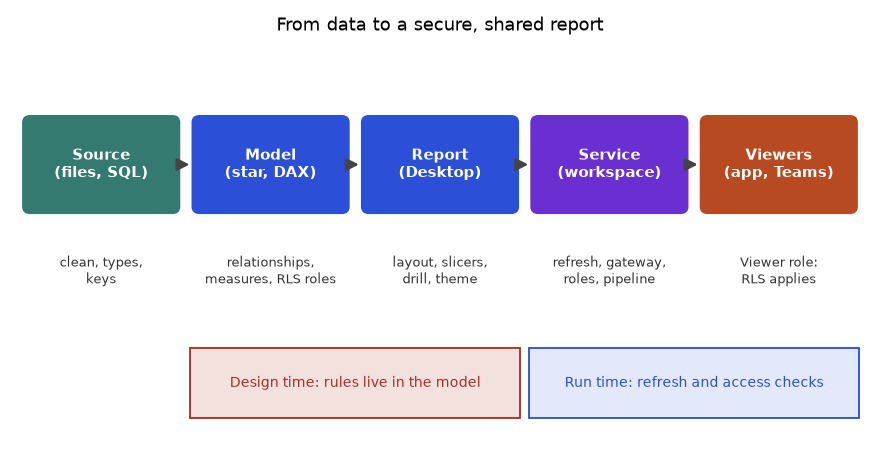
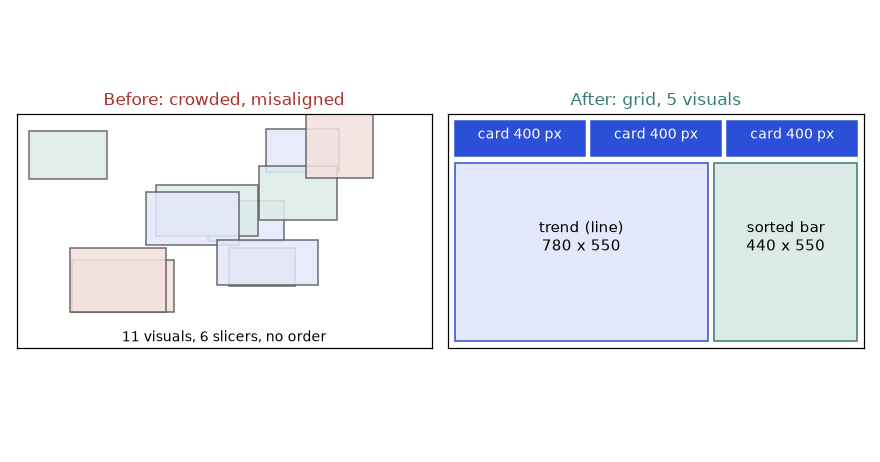
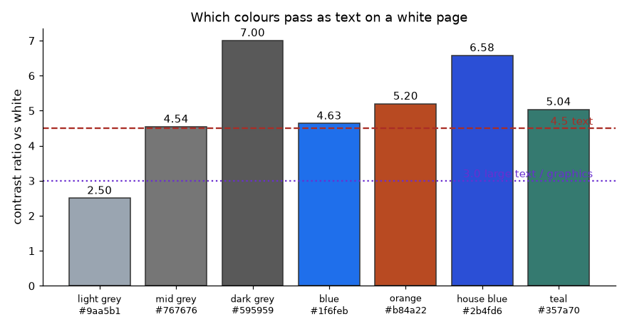
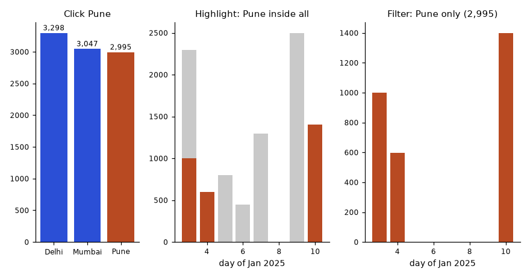
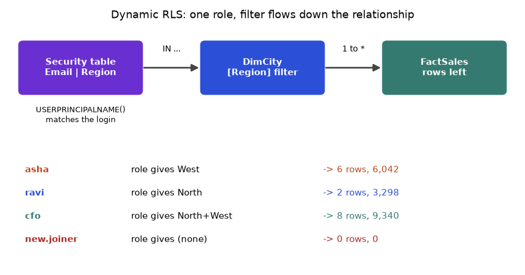
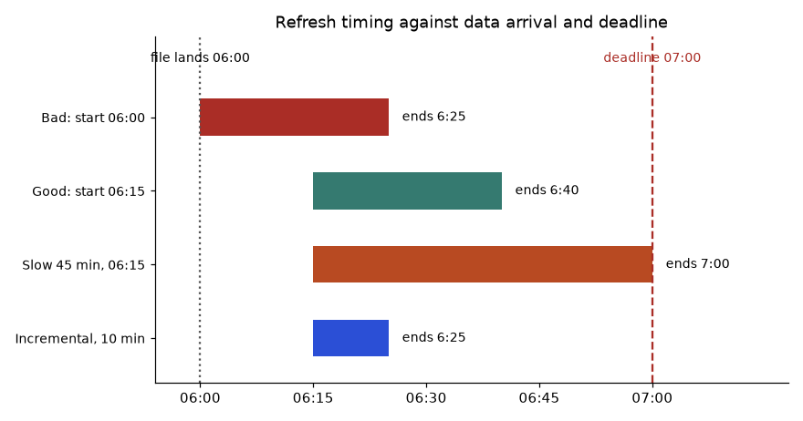
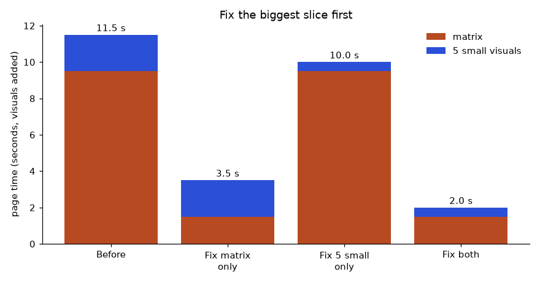
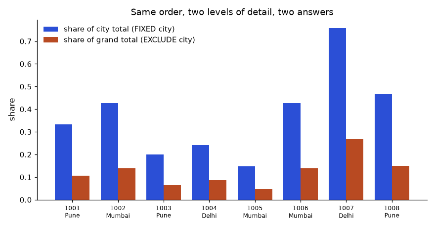
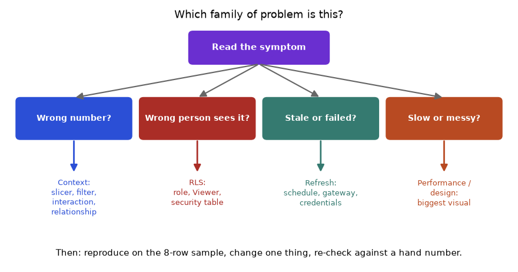

You can now clean data (Chapter 9) and write measures (Chapter 10). A correct number still fails if the report is cluttered, if the wrong person can see it, or if it refreshes at the wrong time. This chapter covers the last mile: designing the page, adding interactivity, restricting data with row-level security (RLS), publishing to the Power BI Service, and keeping the whole thing governed. We end by comparing Power BI with Tableau, Looker Studio and other tools, because job posts often name them. By the end you can design a three-page report, secure it by region, schedule its refresh, and explain which tool you would pick for a given team.
Words you need. Canvas: the page area (Power BI's default is 1280 x 720 pixels, a 16:9 shape). Card: one big number. KPI visual: a number with target and trend. Theme: a saved set of colours and fonts applied to all visuals. Alt text: a written description of a visual for screen-reader users.
Layout rules.
Visual choice (the Chapter 8 table, in Power BI names).
| Need | Visual |
|---|---|
| Compare categories / trend | Sorted bar or column / line (area for volume) |
| Two numbers / exact numbers | Scatter / table or matrix (matrix = pivot with drill) |
| One headline number | Card; KPI for target and trend; gauge sparingly |
| Geography | Map (normalise per customer) |
| Why did it change | Decomposition tree (break a measure down by chosen fields) |
| What drives an outcome | Key influencers (statistical; treat as leads, not proof) |
Custom visuals come from AppSource inside Power BI. They add options but can add risk and slowness; prefer certified ones and check your company policy.
Worked example 11.1.1 Grid arithmetic. Three cards across a 1280-pixel-wide page, with a 20-pixel margin on the left and right and a 20-pixel gap between cards. How wide is each card?
Worked example 11.1.2 Accessible colour. The WCAG guideline asks for a text contrast ratio of at least 4.5 to 1 (3 to 1 for large text). The ratio is (L1 + 0.05) / (L2 + 0.05), where L is the relative luminance (a brightness number from 0 to 1) of the lighter and darker colour. I computed it in Python:
colour on white ratio
#1f6feb (blue) 4.63
#9aa5b1 (grey) 2.5
#595959 (dark) 7.0
#767676 (mid) 4.54Accessibility checklist. Text contrast at least 4.5 to 1; alt text on key visuals; a sensible tab order; never colour alone (add labels or icons); fonts of 10 to 12 pt or more. Apply a theme (View > Themes, or a JSON file) so every visual shares fonts and a short palette.
Storytelling. Put the finding in the page title ("West region is 65% of sales": 6,042 / 9,340 = 0.647), the evidence in the visuals and the recommendation in a short text box (Chapter 14).
Connection to the real job. Stakeholders judge a dashboard in ten seconds; a theme, a grid and message titles make a portfolio look professional.
Applications
Check yourself
How it works.
| Feature | What it does | Typical use |
|---|---|---|
| Slicer | A filter control on the page (list, dropdown, date range) | Region, date |
| Sync slicers | One slicer controls the same field on several pages | Region on all pages |
| Cross-filter / cross-highlight | Clicking a bar filters or highlights other visuals; control with Format > Edit interactions | Click Pune, see its trend |
| Drill down / up | Move down a hierarchy inside one visual (Year to Month to Day) | Category to Product |
| Drill through | Right-click a value to jump to a detail page filtered to it | City to order list |
| Bookmarks | Save a view (filters, visibility); buttons can switch bookmarks | Toggle chart or table, "reset filters" |
| Tooltips (report page) | A small page shown on hover | A mini trend on each bar |
| Buttons / navigation | Click to go to a page or run a bookmark | A menu bar |
| Field parameters | A slicer that swaps the measure or dimension shown | "Show: Sales / Orders / Qty" |
Worked example 11.2.1 Drill-through. A summary page shows sales by city. You right-click Pune and choose Drill through to the "Orders" page, which holds a table of orders. Which rows appear, and what total?
City = Pune to the detail page.FactSales rows for Pune: 1001 (998), 1003 (597), 1008 (1,400).Field parameters. Modeling > New parameter > Fields; choose Total Sales, Orders, Qty. A slicer then picks which measure the chart shows, so one chart does the work of three (check your Desktop version).
Worked example 11.2.2 Edit interactions. Clicking the Pune bar should change the card (total) but not the daily line chart. Select the bar chart, Format > Edit interactions, set the card to Filter and the line to None. The card shows 2,995; the line stays at all-city daily totals (2,297, 597, 799, ...). Clicking empty space returns the card to 9,340.
Connection to the real job. Business users ask "can I see it by X?" constantly. Slicers, drill-through and field parameters answer that without extra pages. Too many slicers, however, confuse; choose 2 or 3 on the left or top.
Applications
Check yourself
Words you need. Workspace: a shared folder in the Service for datasets and reports. App: a packaged read-only version for a wide audience. Gateway: software on a company server that lets the Service reach on-premises data. Deployment pipeline: Dev, Test, Prod stages. Q&A: ask in plain English, get a visual. Copilot: Microsoft's AI assistant in Power BI (availability and licensing change; check current documentation).
How RLS works. You define roles, each with DAX filters on tables. The filter on a dimension flows to the fact table through the relationship (Chapter 9), so one filter secures every related table.
Static RLS. One role per group.
Role "West": DimCity[Region] = "West"
Role "North": DimCity[Region] = "North"Dynamic RLS. One role, driven by a security table Security[Email], Security[Region], not related to other tables:
Role "ByUser":
DimCity[Region] IN CALCULATETABLE(VALUES(Security[Region]),
Security[Email] = USERPRINCIPALNAME())USERPRINCIPALNAME() returns the signed-in user's login (an e-mail style name). Adding a user is then one new row in the table, not a new role. Test in Desktop with Modeling > View as, then assign people or groups to the role in the Service (dataset > Security).
Worked example 11.3.1 What does each user see? The security table has: asha West; ravi North; the CFO has two rows, North and West. Our 8 orders: West = Mumbai and Pune, North = Delhi. Real pandas output:
asha@corp.example 6 rows, total 6042
ravi@corp.example 2 rows, total 3298
cfo@corp.example 8 rows, total 9340
new.joiner@corp.example 0 rows, total 0Important RLS facts.
The Service workflow.
Desktop (.pbix) --Publish--> Workspace (dataset + report)
| |-- Scheduled refresh (via gateway for on-premises data)
| |-- RLS roles assigned
| |-- Share / Publish as App --> viewers
Deployment pipeline: Dev --> Test --> ProdRefresh and gateways. Cloud sources refresh directly in the Service; on-premises sources need a gateway on a machine that stays on. Refresh limits depend on the licence (check current limits). Import mode copies data into the model (fast, needs refresh); DirectQuery queries the source live (current, slower, fewer DAX features).
Worked example 11.3.2 Plan a refresh. A file lands in the source system at 06:00 each day. The dataset refresh takes 25 minutes. Managers expect fresh numbers by 07:00. When should you schedule it, and how much slack remains?
Sharing and Copilot. Share a link (viewer needs a licence and dataset permission), publish an app, or embed in Teams. Q&A and Copilot work best on a clean model (friendly names, synonyms, hidden technical columns); always verify an AI-made visual against a number you trust, and check your data policy first.
Connection to the real job. In an interview, "how would you restrict data by region?" and "what happens on refresh?" are common. Explain dynamic RLS with a security table, and viewers versus members.
Applications
Check yourself
Governance checklist.
Total Sales, Delivered Rate), FactSales/DimCity, hide keys and helper columns..pbip project files in Git where supported, deployment pipelines.Semantic layer. A semantic layer is one shared place where business definitions (revenue, active customer) live as code or model, so every dashboard gets the same number. In Power BI it is the shared certified dataset. Elsewhere: LookML (Looker), dbt's semantic layer or metrics definitions, Cube. The idea: define once, reuse everywhere.
Performance tuning. Measure with Performance Analyzer (Chapter 10); cut visuals per page; keep a star schema with integer keys and no unused columns; replace slow DAX; aggregate at the source or use incremental refresh (Chapter 9); avoid slicers with huge lists.
Worked example 11.4.1 Write a data-dictionary entry and check the number.
| Field | Entry |
|---|---|
| Name | Delivered Rate |
| Definition | Share of order value with status Delivered |
| Formula | DIVIDE(CALCULATE([Total Sales], FactSales[Status] = "Delivered"), [Total Sales]) |
| Owner | Sales analytics |
| Source | FactSales, refreshed daily 06:15 |
| Example | January 2025 sample: 8,293 / 9,340 = 88.8% |
Worked example 11.4.2 Triage a slow page (12 s). Performance Analyzer shows a matrix at 9.5 s and five other visuals at 0.4 s each.
FILTER over the whole table.Connection to the real job. Governance is what distinguishes a senior analyst from someone who only builds charts. Roles such as "BI developer" and "analytics engineer" are largely about shared, certified models.
Applications
Check yourself
Tableau. Strong, flexible visual exploration, popular in many large companies. Key ideas: calculated fields (formulas per row or aggregate), parameters (user inputs), dashboard actions (filter, highlight, URL), and LOD (level of detail) expressions: {FIXED ...}, {INCLUDE ...}, {EXCLUDE ...}. Live connections or extracts (Hyper files). Tableau Public is free (public data only); Tableau Desktop Specialist is an entry certificate.
Worked example 11.5.1 An LOD expression, checked with pandas. Each order's share of its city total in Tableau:
[Amount] / { FIXED [City] : SUM([Amount]) }{ FIXED [City] : SUM([Amount]) } computes the city total regardless of what is in the view, and attaches it to each row: Pune 2,995, Mumbai 3,047, Delhi 3,298.groupby("City").transform("sum")) gives 0.333, 0.199, 0.467 for Pune; Pune's three shares add to 0.999 (rounding), that is 100%.FIXED does what CALCULATE(..., ALLEXCEPT(...)) does in DAX (Chapter 10). EXCLUDE [City] drops City from the level (9,340 in a city view); INCLUDE [OrderID] adds a finer level.Looker Studio (free, Google; not the same as Looker). Connects easily to Google Sheets, BigQuery, GA4 and CSV uploads. Calculated fields, data blending (joining sources inside the report), free sharing by link, scheduled e-mail delivery. Simple and quick; much weaker at modelling (no star schema with relationships like Power BI, no DAX-style measures, limited row-level security) and slower on large data.
Looker (LookML) is a paid platform whose semantic layer is code (dimensions, measures, joins) kept in Git. Metabase and Apache Superset are open source and SQL-friendly; Qlik uses an in-memory associative engine (awareness). Excel Power Pivot uses the same DAX as Power BI. In short: Power BI has the strongest modelling (DAX, RLS), Tableau the most flexible visuals, Looker Studio the lowest cost; pricing changes, so check current pages.
Worked example 11.5.2 Choose the tool. (a) A startup with data in Google Sheets and GA4, no budget. (b) A bank on Microsoft 365 needing RLS by branch and a governed model. (c) A team that wants deep visual exploration and has Tableau already.
Not covered here. Product and web analytics tools (GA4, Mixpanel, tracking plans, UTM tags) and survey analysis; Chapter 12 builds funnels and cohorts. Certification: Microsoft PL-300 (Power BI Data Analyst) tests Chapters 9 to 11; use Microsoft Learn's free practice material and build one full project.
Connection to the real job. Learn one BI tool deeply (Power BI), and know the vocabulary of the others. In interviews, show a project where you modelled, secured and explained a dashboard.
Applications
Check yourself
{ FIXED [City] : SUM([Amount]) } compute? Answer: The sum of Amount per city, regardless of the view's own level.Sections 11.1 to 11.5 explained each feature once. This extension section and the ones after it teach you to solve problems with them: given a messy brief, a wrong number, a leaked row, a late refresh or a slow page, you will know which of four families it belongs to, what to test first and how to know you are right. Every number below comes from the same 8-order shop table used since Chapter 9, so you can check everything by hand.
| Term | Plain meaning | Where it bites |
|---|---|---|
| Semantic model (dataset) | The tables, relationships and measures behind a report. Reports are thin views on top of it. | Many reports can share one model; fix a definition once. |
| Filter context | The set of filters active for one number (slicers, page filters, the row or bar it sits in). | Same measure, different number on two visuals. |
| Slicer | A control on the page that filters visuals. | Hidden or unsynced slicers cause 'my number differs' tickets. |
| Cross-filter / cross-highlight | Clicking a mark filters (or dims) other visuals. | Cards that ignore a click, or totals that change unexpectedly. |
| Drill down / drill through | Down a hierarchy inside a visual / jump to a detail page for the chosen value. | Detail page total must equal the clicked bar. |
| Bookmark | A saved view: filters, visibility, page. | Stale saved filters hide new data. |
| Field parameter | A slicer that swaps which measure or column a visual uses. | One chart replaces three. |
| RLS (row-level security) | Rules that decide which rows each viewer may see. | Authors and editors bypass it. |
| Role | A named set of RLS filters. | A user in two roles gets the union. |
| Security table | A table of (user, allowed region) rows used for dynamic RLS. | A user missing from it sees an empty report. |
| Workspace | A shared folder in the Service holding models and reports. | Workspace roles decide who edits and who only views. |
| App | A packaged read-only set of reports for a wide audience. | Audiences in an app do not replace RLS. |
| Gateway | Software on an always-on machine that lets the Service reach on-premises data. | Offline gateway means failed refresh. |
| Import / DirectQuery | Copy data into the model / ask the source live. | Import is fast but needs refresh; DirectQuery is current but slower. |
| Refresh | Reloading the model from its sources. | Starts too early and you load yesterday's file. |
| Certified dataset | A reviewed shared model marked in the Service. | Without one, five copies disagree. |
| Semantic layer | One shared place where business definitions live. | Define once, reuse everywhere. |
| LOD expression | Tableau formula that computes at a stated level of detail. | FIXED ignores most filters. |
| Contrast ratio | Brightness difference between text and background (1 to 21). | Below 4.5 fails for normal text. |
| Performance Analyzer | Desktop pane that times every visual and splits it into DAX query, display and other. | Tune the slowest visual first. |

How to read it: follow the arrows left to right. A problem usually lives at one box: a wrong number is a model or filter problem, a wrong viewer is a role problem, a stale number is a refresh problem. Name the box before you touch anything.
Keep these in your head; every example reuses them. The code builds the 8-order table with a Region column and groups it three ways.
import pandas as pd
orders = pd.DataFrame({
"OrderID": [1001, 1002, 1003, 1004, 1005, 1006, 1007, 1008],
"Date": pd.to_datetime(["2025-01-03", "2025-01-03", "2025-01-04", "2025-01-05",
"2025-01-06", "2025-01-07", "2025-01-09", "2025-01-10"]),
"City": ["Pune", "Mumbai", "Pune", "Delhi", "Mumbai", "Mumbai", "Delhi", "Pune"],
"Status": ["Delivered", "Delivered", "Returned", "Delivered", "Cancelled", "Delivered", "Delivered", "Delivered"],
"Qty": [2, 1, 3, 1, 5, 2, 1, 4],
"Amount": [998, 1299, 597, 799, 450, 1298, 2499, 1400]})
region = {"Delhi": "North", "Mumbai": "West", "Pune": "West"}
orders["Region"] = orders["City"].map(region)
print(orders.groupby("City").Amount.agg(["count", "sum"]).to_string())
print(orders.groupby("Region").Amount.agg(["count", "sum"]).to_string())
print(orders.groupby("Status").Amount.agg(["count", "sum"]).to_string())
print("total", orders.Amount.sum(), "qty", orders.Qty.sum()) count sum
City
Delhi 2 3298
Mumbai 3 3047
Pune 3 2995
count sum
Region
North 2 3298
West 6 6042
count sum
Status
Cancelled 1 450
Delivered 6 8293
Returned 1 597
total 9340 qty 19pd.DataFrame with one list per column, dates converted by pd.to_datetime. A city to region dictionary adds Region with .map.groupby("City") splits the rows by city; .Amount.agg(["count", "sum"]) counts rows and adds amounts in each group.Remember: Delhi 3,298 (2 orders), Mumbai 3,047 (3), Pune 2,995 (3); West 6,042 (6 orders), North 3,298 (2); Delivered 8,293 (6), Returned 597 (1), Cancelled 450 (1); total 9,340.
Problem 11.6.1 Classify each complaint into show, explore, protect or deliver, and name the first thing you would check. (a) 'The card says 9,340 but the table says 8,293.' (b) 'Asha can see North numbers.' (c) 'Monday morning the report still shows Friday data.' (d) 'I cannot read the grey axis labels.'
| Idea | Match the symptom to one of four families, then the first test is the cheapest one in that family. |
|---|---|
| (a) | Explore (filter context). A hidden page, visual or slicer filter such as Status = Delivered explains 9,340 versus 8,293 (the 1,047 gap is 597 returned plus 450 cancelled). Check the Filters pane of the table visual. |
| (b) | Protect. Check that Asha is a Viewer, not a Member, and open View as role. Then check whether she appears under a second role or a second security-table row. |
| (c) | Deliver. Check refresh history for a failure or a schedule that skips weekends, then gateway status and credentials. |
| (d) | Show. Measure contrast (light grey on white is about 2.5, needs 4.5). Change to dark grey 595959. |
| Check | Each first test is free (no model change) and can be done in under two minutes. |
Alignment is not taste; it is subtraction and division. Given a page width W, a margin m on each side, a gap g between neighbours and n equal items:
and the left edge of item k (counting from 0) is m + k·(width + g). The same formula works vertically with the page height. The function below returns both.
def grid(total, margin, gap, n):
width = (total - 2 * margin - (n - 1) * gap) / n
starts = [margin + k * (width + gap) for k in range(n)]
return width, starts
print(grid(1280, 20, 20, 3))
print(grid(1280, 20, 20, 4))
w, s = grid(1280, 15, 15, 3)
print(round(w, 1), [round(x, 1) for x in s])(400.0, [20.0, 440.0, 860.0])
(295.0, [20.0, 335.0, 650.0, 965.0])
406.7 [15.0, 436.7, 858.3]def grid(...) defines a function with page size, margin, gap and item count.starts is a list comprehension: item k starts after the margin plus k widths plus k gaps.Problem 11.7.1 Design the page in the layout figure: three cards on top (110 px tall), then a trend chart and a sorted bar below sharing the remaining area. Page 1280 x 720, margin 20, gap 20. The trend gets about 64% of the width. Give all positions.
| Horizontal | Cards: 3 of width 400 at x = 20, 440, 860 (Worked example 11.1.1). Lower row: 1280 − 40 − 20 = 1,220 usable pixels for two visuals. |
|---|---|
| Split | 64% of 1,220 = 780.8, round to 780. The bar gets 1,220 − 780 = 440. |
| Vertical | Cards occupy y from 20 to 130. Gap 20 puts the lower row at y = 150. Bottom margin 20 leaves 720 − 20 − 150 = 550 pixels of height. |
| Positions | Trend: x = 20, y = 150, 780 x 550. Bar: x = 20 + 780 + 20 = 820, y = 150, 440 x 550. The right edge is 820 + 440 = 1,260 = 1280 − 20. |
| Check | Add up widths and gaps: 20 + 780 + 20 + 440 + 20 = 1,280. Vertical: 20 + 110 + 20 + 550 + 20 = 720. |

How to read it: count the visuals first, then the empty space. The right page has fewer elements, equal gaps and one obvious reading order (top-left card to bottom-right bar). Fewer, aligned visuals are faster to read and to maintain.
WCAG defines contrast from relative luminance, a number from 0 (black) to 1 (white) that models how bright a colour looks. Steps for one colour: (1) split the hex code into red, green, blue and divide each by 255; (2) linearise each channel c: if c ≤ 0.03928 use c/12.92, otherwise ((c + 0.055)/1.055)2.4; (3) L = 0.2126·R + 0.7152·G + 0.0722·B. Then contrast = (Llighter + 0.05) / (Ldarker + 0.05). Green weighs most because our eyes are most sensitive to it.
def lin(c):
c = c / 255
return c / 12.92 if c <= 0.03928 else ((c + 0.055) / 1.055) ** 2.4
def lum(hexcode):
h = hexcode.lstrip("#")
r, g, b = (lin(int(h[i:i + 2], 16)) for i in (0, 2, 4))
return 0.2126 * r + 0.7152 * g + 0.0722 * b
def contrast(a, b):
hi, lo = sorted([lum(a), lum(b)], reverse=True)
return (hi + 0.05) / (lo + 0.05)
for name, col in [("light grey", "#9aa5b1"), ("mid grey", "#767676"), ("dark grey", "#595959"),
("blue", "#1f6feb"), ("house blue", "#2b4fd6"), ("house orange", "#b84a22"),
("house teal", "#357a70")]:
print(f"{name:12s} {col} on white {contrast(col, '#ffffff'):5.2f}")
print("white text on house blue", round(contrast("#ffffff", "#2b4fd6"), 2))
print("dark grey on light panel F2F2F2", round(contrast("#595959", "#f2f2f2"), 2))
print("light grey on light panel F2F2F2", round(contrast("#9aa5b1", "#f2f2f2"), 2))light grey #9aa5b1 on white 2.50
mid grey #767676 on white 4.54
dark grey #595959 on white 7.00
blue #1f6feb on white 4.63
house blue #2b4fd6 on white 6.58
house orange #b84a22 on white 5.20
house teal #357a70 on white 5.04
white text on house blue 6.58
dark grey on light panel F2F2F2 6.26
light grey on light panel F2F2F2 2.24lin is step 2: it undoes the screen's gamma so brightness adds up properly.lum is steps 1 and 3: it reads three hex pairs with int(..., 16), linearises each and mixes them with the weights.contrast sorts the two luminances so the lighter is on top, then applies the ratio formula. Argument order therefore does not matter.
How to read it: bars are the ratio, the dashed line is the text limit and the dotted line is the limit for large text and graphics. Light grey fails everything, mid grey 767676 is the lightest grey that passes, and all three house colours pass as text.
Problem 11.7.2 A KPI tile uses white text on the house orange #b84a22 and a 12 pt font. Does it pass? What if the tile background is light grey #9aa5b1 with white text?
| Formula | contrast = (L-lighter + 0.05) / (L-darker + 0.05), with white L = 1. |
|---|---|
| Orange tile | L(orange) = 0.152, so (1 + 0.05) / (0.152 + 0.05) = 5.20. It passes for normal text (4.5). |
| Grey tile | L(light grey) = 0.3695, so 1.05 / 0.4195 = 2.50. It fails even for large text (3.0). |
| Answer | Orange passes; light grey fails. Keep the orange tile, or change the text to near black on the grey. |
| Check | Run contrast('#ffffff', '#b84a22') in the code above: 5.20. |
Start from the question, not the chart gallery. The table extends the one in 11.1 with the traps.
| Question | Best visual | Avoid | Why |
|---|---|---|---|
| Which category is biggest? | Sorted horizontal bar | Pie with 8 slices, 3D bars | Length is compared more accurately than angle or area. |
| How did it change over time? | Line (bars for few periods) | Stacked area with 6 series | Slope shows trend; stacked layers hide it. |
| Share of a whole, 2 or 3 parts | Single stacked bar, or donut with direct labels | Pie of 10 parts | Few parts only. |
| Two measures related? | Scatter | Dual-axis line chart | Dual axes invent a correlation by scale choice. |
| Exact values needed | Table or matrix | Chart with hidden labels | Readers look values up. |
| Actual versus target | KPI visual or bullet bar | Gauge for everything | A gauge uses much space for one number. |
| Contribution to a change | Waterfall or decomposition tree | Two side-by-side bars | Shows the steps from start to end. |
| Where? | Map of a rate per customer | Map of raw counts (shows population) | Big cities are always big. |
Problem 11.7.3 A manager asks: 'Show sales by city, and I want to see which city is top at a glance.' Choose the visual, the sort, the colour use and the page title using our numbers.
| Visual | Horizontal bar with three bars (a pie would work but is harder to rank; three bars cost nothing). |
|---|---|
| Sort | Descending by value: Delhi 3,298, Mumbai 3,047, Pune 2,995. Sorting is part of the design, not an option. |
| Colour | One neutral colour for Mumbai and Pune, one accent for Delhi, the top city. Direct value labels, no gridlines, axis starts at 0. |
| Title | 'Delhi leads by 251 over Mumbai' (3,298 − 3,047 = 251; as a share, 251 / 3,047 = 8.2%). |
| Check | Sum of labels 3,298 + 3,047 + 2,995 = 9,340, equal to the total card. |
Problem 11.7.4 The same manager now asks for the trend of daily sales (January 3 to 10) and which day was the peak. Choose the visual and describe two design traps.
| Data | Daily totals from the table: Jan 3 2,297; Jan 4 597; Jan 5 799; Jan 6 450; Jan 7 1,298; Jan 9 2,499; Jan 10 1,400. There is no order on Jan 8. |
|---|---|
| Visual | Line chart on a continuous date axis, with the peak (Jan 9, 2,499) labelled. A categorical axis would drop Jan 8 and draw a misleading line between Jan 7 and Jan 9. |
| Trap 1 | Zero-sales days. A date axis with a date table (Chapter 9) shows Jan 8 as 0 or blank; decide on purpose and say which in the footnote. |
| Trap 2 | 8 days is too little for a trend claim: say 'daily sales are volatile, 450 to 2,499'. |
| Check | Sum 2,297 + 597 + 799 + 450 + 1,298 + 2,499 + 1,400 = 9,340. |
A theme is a JSON file (View > Themes > Browse for themes). It sets the colour order for series, the page background and default text colour once, instead of formatting each visual. The code builds a small theme, checks every colour against white, and writes valid JSON. Power BI reads the keys name, dataColors, background, foreground and tableAccent; the full list of keys is in the current documentation.
import json
def lin(c):
c = c / 255
return c / 12.92 if c <= 0.03928 else ((c + 0.055) / 1.055) ** 2.4
def lum(h):
h = h.lstrip("#")
r, g, b = (lin(int(h[i:i + 2], 16)) for i in (0, 2, 4))
return 0.2126 * r + 0.7152 * g + 0.0722 * b
theme = {"name": "Shop house style",
"dataColors": ["#2b4fd6", "#b84a22", "#357a70", "#aa2d26", "#6a2fd0"],
"background": "#ffffff", "foreground": "#595959", "tableAccent": "#2b4fd6"}
for c in theme["dataColors"]:
print(c, round(1.05 / (lum(c) + 0.05), 2), "ok" if 1.05 / (lum(c) + 0.05) >= 3 else "WEAK")
print(json.dumps({"name": theme["name"], "n_colours": len(theme["dataColors"])}))#2b4fd6 6.58 ok
#b84a22 5.2 ok
#357a70 5.04 ok
#aa2d26 6.75 ok
#6a2fd0 7.17 ok
{"name": "Shop house style", "n_colours": 5}lin and lum repeat the luminance steps from the contrast code so the block runs on its own.theme is a Python dict with the same keys as the JSON file Power BI loads; dataColors is the order in which series get colours.json.dumps, the call that would write the file (use json.dump(theme, open('theme.json','w')) to save it).A visual can be affected by four layers of filters: report-level (all pages), page-level, visual-level, and slicers or cross-filters from other visuals. They combine with AND: a row must pass all of them. This is why hidden filters are dangerous. The function below simulates the stack on our table.
import pandas as pd
orders = pd.DataFrame({
"OrderID": [1001, 1002, 1003, 1004, 1005, 1006, 1007, 1008],
"Date": pd.to_datetime(["2025-01-03", "2025-01-03", "2025-01-04", "2025-01-05",
"2025-01-06", "2025-01-07", "2025-01-09", "2025-01-10"]),
"City": ["Pune", "Mumbai", "Pune", "Delhi", "Mumbai", "Mumbai", "Delhi", "Pune"],
"Status": ["Delivered", "Delivered", "Returned", "Delivered", "Cancelled", "Delivered", "Delivered", "Delivered"],
"Qty": [2, 1, 3, 1, 5, 2, 1, 4],
"Amount": [998, 1299, 597, 799, 450, 1298, 2499, 1400]})
region = {"Delhi": "North", "Mumbai": "West", "Pune": "West"}
orders["Region"] = orders["City"].map(region)
def visual(df, **filters):
# each keyword is column=allowed values; rows must satisfy every filter (AND)
for col, allowed in filters.items():
df = df[df[col].isin(allowed)]
return df
print("no filters ", visual(orders).Amount.sum())
print("slicer West ", visual(orders, Region=["West"]).Amount.sum())
print("+ page Delivered", visual(orders, Region=["West"], Status=["Delivered"]).Amount.sum())
print("+ cross-filter Pune", visual(orders, Region=["West"], Status=["Delivered"], City=["Pune"]).Amount.sum())no filters 9340
slicer West 6042
+ page Delivered 4995
+ cross-filter Pune 2398visual takes a table and any number of column=[allowed values] pairs. **filters collects them as a dictionary.isin. Applying them one after the other is the same as AND: a row survives only if every test keeps it.Problem 11.8.1 A report has a page-level filter Status = Delivered and a region slicer set to West. A card shows [Total Sales]. A colleague, whose copy has no page filter, reads 6,042. What does your card show and why?
| Idea | Filters combine with AND, so the card sees only the rows passing both. |
|---|---|
| Step 1 | Slicer West keeps orders 1001, 1002, 1003, 1005, 1006, 1008 (6 rows, 6,042). |
| Step 2 | Page filter Delivered removes 1003 (Returned, 597) and 1005 (Cancelled, 450). |
| Step 3 | Remaining: 998 + 1,299 + 1,298 + 1,400 = 4,995. |
| Answer | Your card shows 4,995; your colleague's 6,042. The gap, 1,047, is exactly the removed orders. |
| Check | 6,042 − 597 − 450 = 4,995. In practice you find the difference by comparing the Filters pane of both copies. |
When you click a mark, every other visual on the page responds one of three ways: Filter (shows only the matching rows), Highlight (shows everything, with the matching part drawn darker; only for visuals that can show a part of a whole, such as bar, column, area and some others) or None (ignores the click). You set it per target visual under Format > Edit interactions. Cards and tables can be filtered but not highlighted. The code shows the three outcomes for a click on Pune.
import pandas as pd
orders = pd.DataFrame({
"OrderID": [1001, 1002, 1003, 1004, 1005, 1006, 1007, 1008],
"Date": pd.to_datetime(["2025-01-03", "2025-01-03", "2025-01-04", "2025-01-05",
"2025-01-06", "2025-01-07", "2025-01-09", "2025-01-10"]),
"City": ["Pune", "Mumbai", "Pune", "Delhi", "Mumbai", "Mumbai", "Delhi", "Pune"],
"Status": ["Delivered", "Delivered", "Returned", "Delivered", "Cancelled", "Delivered", "Delivered", "Delivered"],
"Qty": [2, 1, 3, 1, 5, 2, 1, 4],
"Amount": [998, 1299, 597, 799, 450, 1298, 2499, 1400]})
region = {"Delhi": "North", "Mumbai": "West", "Pune": "West"}
orders["Region"] = orders["City"].map(region)
daily = orders.groupby(orders.Date.dt.day).Amount.sum()
pune = orders[orders.City == "Pune"].groupby(orders.Date.dt.day).Amount.sum()
print("None :", daily.to_dict())
print("Highlight :", {d: (int(pune.get(d, 0)), int(v)) for d, v in daily.items()})
print("Filter :", pune.to_dict())
print("card (Filter):", orders[orders.City == "Pune"].Amount.sum(), " card (None):", orders.Amount.sum())None : {3: 2297, 4: 597, 5: 799, 6: 450, 7: 1298, 9: 2499, 10: 1400}
Highlight : {3: (998, 2297), 4: (597, 597), 5: (0, 799), 6: (0, 450), 7: (0, 1298), 9: (0, 2499), 10: (1400, 1400)}
Filter : {3: 998, 4: 597, 10: 1400}
card (Filter): 2995 card (None): 9340daily groups all rows by the day number of the date: this is the line chart before any click.pune does the same for Pune rows only.
How to read it: compare the middle and right panels on January 3. Highlight shows 2,297 in grey with 998 darkened (Pune's share of that day). Filter shows only the 998 bar. Highlight keeps context; Filter focuses.
Problem 11.8.2 The user clicks Mumbai in the city bar chart. A card is set to Filter, a daily column chart to Highlight, and a table to None. What do the three show?
| Mumbai rows | 1002 (Jan 3, 1,299), 1005 (Jan 6, 450), 1006 (Jan 7, 1,298); total 3,047. |
|---|---|
| Card (Filter) | 3,047. |
| Column chart (Highlight) | Jan 3 shows 1,299 darkened inside 2,297; Jan 6 shows 450 darkened inside 450 (all Mumbai); Jan 7 shows 1,298 inside 1,298; the other days are all grey. |
| Table (None) | All 8 rows, unchanged. |
| Check | 1,299 + 450 + 1,298 = 3,047, equal to the Mumbai bar. |
Problem 11.8.3 Users complain that a card never changes when they click a bar. Give the three most likely causes in the order you would check them.
| Cause 1 | Edit interactions: the bar chart's interaction towards the card is set to None. Fix: select the bar, Format > Edit interactions, click the Filter icon on the card. |
|---|---|
| Cause 2 | The card's measure ignores the filter, for example it uses ALL(DimCity) or REMOVEFILTERS (Chapter 10), or the card is on a column from a table with no relationship to the one clicked. |
| Cause 3 | The clicked field is on a disconnected table. A click filters only tables that are related to it. |
| Answer | Check interaction setting first (10 seconds), then the measure, then the relationship diagram. |
| Check | Test with a plain SUM(FactSales[Amount]) measure: if it responds, the problem is your measure, not the page. |
| Feature | What it carries | Typical question | Watch out for |
|---|---|---|---|
| Drill down | Position in a hierarchy inside one visual | Region, then city, then order? | Totals at each level must add up to the level above. |
| Drill through | The filter on the clicked value, to another page | Show me the orders behind Pune | The detail page needs fields in its Drill-through well; 'Keep all filters' decides whether slicers also travel. |
| Report-page tooltip | The hovered value, to a small page | Mini trend on each bar | Page size must be the Tooltip size; heavy tooltips slow hovering. |
| Bookmark | A saved state: filters, visibility, page | Toggle chart/table, reset all | A bookmark that saves data state can freeze old selections. |
| Button/navigation | An action: page, bookmark, URL | A menu bar | Hidden buttons need alt text for keyboard users. |
Problem 11.8.4 Drill down a hierarchy Region, City, Order in a matrix. Write the numbers at each of the three levels for West.
| Level 1 | West = 6,042 (6 orders). |
|---|---|
| Level 2 | Mumbai 3,047 and Pune 2,995; 3,047 + 2,995 = 6,042. |
| Level 3 | Pune expands to orders 1001 (998), 1003 (597), 1008 (1,400); 998 + 597 + 1,400 = 2,995. |
| Check | Each level adds up to the level above. If it did not, a measure would be breaking the hierarchy (a classic sign of a non-additive measure, Chapter 10). |
| Code | orders.groupby(['Region','City','OrderID']).Amount.sum() reproduces all three levels. |
Problem 11.8.5 Drill through from Mumbai with 'Keep all filters' on, while a page slicer says Status = Delivered. Which rows reach the detail page?
| Passed filters | City = Mumbai (the clicked value) plus Status = Delivered (kept slicer). |
|---|---|
| Rows | Mumbai: 1002 Delivered, 1005 Cancelled, 1006 Delivered. Keep 1002 and 1006. |
| Total | 1,299 + 1,298 = 2,597. |
| Answer | Two rows, 2,597. With 'Keep all filters' off, the slicer would not travel and the page would show all three Mumbai rows (3,047). |
| Check | The summary bar for Mumbai under the same slicer also reads 2,597, so the numbers agree. |
Users often ask to see Sales, Orders or Quantity on the same chart. Instead of three charts, give one chart a switch. Power BI Desktop has Modeling > New parameter > Fields, which creates a calculated table. The older pattern is a disconnected table plus a SWITCH measure. Both are DAX and not run here; the Python block below emulates what each choice returns so you know the expected values.
-- Field parameter (Desktop generates this for you)
Metric = {
("Total Sales", NAMEOF('Measures'[Total Sales]), 0),
("Orders", NAMEOF('Measures'[Orders]), 1),
("Quantity", NAMEOF('Measures'[Quantity]), 2)
}
-- Older pattern: disconnected table MetricPick[Metric] with the three names
Selected Metric =
SWITCH(
SELECTEDVALUE(MetricPick[Metric], "Sales"),
"Sales", [Total Sales],
"Orders", [Orders],
"Quantity", [Quantity]
)import pandas as pd
orders = pd.DataFrame({
"OrderID": [1001, 1002, 1003, 1004, 1005, 1006, 1007, 1008],
"Date": pd.to_datetime(["2025-01-03", "2025-01-03", "2025-01-04", "2025-01-05",
"2025-01-06", "2025-01-07", "2025-01-09", "2025-01-10"]),
"City": ["Pune", "Mumbai", "Pune", "Delhi", "Mumbai", "Mumbai", "Delhi", "Pune"],
"Status": ["Delivered", "Delivered", "Returned", "Delivered", "Cancelled", "Delivered", "Delivered", "Delivered"],
"Qty": [2, 1, 3, 1, 5, 2, 1, 4],
"Amount": [998, 1299, 597, 799, 450, 1298, 2499, 1400]})
region = {"Delhi": "North", "Mumbai": "West", "Pune": "West"}
orders["Region"] = orders["City"].map(region)
measures = {"Sales": lambda d: d.Amount.sum(),
"Orders": lambda d: d.OrderID.nunique(),
"Quantity": lambda d: d.Qty.sum()}
for pick, fn in measures.items():
print(pick.ljust(9), {c: int(fn(g)) for c, g in orders.groupby("City")}, "total", int(fn(orders)))Sales {'Delhi': 3298, 'Mumbai': 3047, 'Pune': 2995} total 9340
Orders {'Delhi': 2, 'Mumbai': 3, 'Pune': 3} total 8
Quantity {'Delhi': 2, 'Mumbai': 8, 'Pune': 9} total 19measures maps each slicer choice to a function, exactly what SWITCH does.SELECTEDVALUE(col, default) returns the single selected value, or the default when none or several are selected; without the default the measure would show blank when nothing is picked.Problem 11.8.6 With the Quantity choice, the chart title should read 'Quantity by city'. Which city is largest, and what is Pune's share?
| Quantity per city | Delhi: 1004 (1) + 1007 (1) = 2. Mumbai: 1002 (1) + 1005 (5) + 1006 (2) = 8. Pune: 1001 (2) + 1003 (3) + 1008 (4) = 9. |
|---|---|
| Largest | Pune with 9, though it is the lowest city in Sales (2,995). The metric changes the ranking. |
| Share | 9 / 19 = 0.474, about 47.4%. |
| Title | Make the title dynamic: "Chart title" = SELECTEDVALUE(Metric[Metric]) & " by city" as a measure bound to the title (conditional formatting, fx button). |
| Check | 2 + 8 + 9 = 19 matches the total quantity. |
| Pattern | Role filter (DAX, not run here) | Use when | Cost |
|---|---|---|---|
| Static | DimCity[Region] = "West" | 3 to 5 stable groups | One role per group; adding a group means a model change and republish. |
| Dynamic by user | DimCity[Region] IN CALCULATETABLE(VALUES(Security[Region]), Security[Email] = USERPRINCIPALNAME()) | Many users, changing access | One role; access is a data change in the security table. |
| Dynamic, user owns rows | Orders[OwnerEmail] = USERPRINCIPALNAME() | Each user sees only their own records | Filter sits on a large fact table, so keep it simple. |
| Hierarchy (manager sees team) | PATHCONTAINS(Employee[Path], LOOKUPVALUE(Employee[EmpID], Employee[Email], USERPRINCIPALNAME())) | Org trees | Needs a Path = PATH(Employee[EmpID], Employee[ManagerID]) column. |
| Whole row hidden by default | FALSE() on a table | Block a table for a role | Combine with other roles carefully; roles are ORed. |

How to read it: read the top row as 'filter travels from the security table to the region dimension to the facts'. The list underneath is the result: each user gets only the rows whose region is in their rows of the table.
The next block rebuilds dynamic RLS in SQL, the same logic the engine applies: keep fact rows whose city belongs to a region listed for the user.
import sqlite3, pandas as pd
con = sqlite3.connect(":memory:")
con.executescript('''
CREATE TABLE dim_city(city TEXT, region TEXT);
INSERT INTO dim_city VALUES ('Delhi','North'),('Mumbai','West'),('Pune','West');
CREATE TABLE fact(order_id INT, city TEXT, amount INT);
INSERT INTO fact VALUES (1001,'Pune',998),(1002,'Mumbai',1299),(1003,'Pune',597),(1004,'Delhi',799),
(1005,'Mumbai',450),(1006,'Mumbai',1298),(1007,'Delhi',2499),(1008,'Pune',1400);
CREATE TABLE security(email TEXT, region TEXT);
INSERT INTO security VALUES ('asha@corp.example','West'),('ravi@corp.example','North'),
('cfo@corp.example','North'),('cfo@corp.example','West');
''')
sql = '''
SELECT COUNT(*) AS n_rows, COALESCE(SUM(f.amount), 0) AS total
FROM fact f JOIN dim_city d ON d.city = f.city
WHERE d.region IN (SELECT region FROM security WHERE email = ?)
'''
for user in ["asha@corp.example", "ravi@corp.example", "cfo@corp.example", "new.joiner@corp.example"]:
n, t = con.execute(sql, (user,)).fetchone()
print(f"{user:25s} rows={n} total={t}")asha@corp.example rows=6 total=6042
ravi@corp.example rows=2 total=3298
cfo@corp.example rows=8 total=9340
new.joiner@corp.example rows=0 total=0SELECT region FROM security WHERE email = ? is the DAX CALCULATETABLE(VALUES(Security[Region]), Security[Email] = USERPRINCIPALNAME()); the ? plays the role of the signed-in user.COALESCE(SUM(...), 0) turns the empty result into 0 so a missing user shows 0, like an empty report.Problem 11.9.1 Add Neha, who covers only Mumbai, not the whole West region. Which design change is needed with a Region-level security table, and what total should she see?
| Problem | The security table holds Region, so Neha would get Mumbai and Pune. Granularity of the table decides the granularity of access. |
|---|---|
| Option A | Change the security column to City: (neha, Mumbai). The role filter then targets DimCity[City]. All other users need City rows too (asha gets Mumbai and Pune). |
| Option B | Keep Region and add a second column or table for exceptions. Simpler to reason about is Option A. |
| Neha's total | Mumbai orders 1002, 1005, 1006: 1,299 + 450 + 1,298 = 3,047. |
| Check | With Option A, Asha's two rows (Mumbai, Pune) give 3,047 + 2,995 = 6,042, the same as before the change. |
With an employee table that stores each person's manager, the DAX function PATH(EmpID, ManagerID) builds a text such as 1|2|4|6 (the chain from the top down to that person). PATHCONTAINS(path, id) then asks whether a given person is anywhere in that chain, so a manager automatically sees everyone below. The block reproduces PATH and PATHCONTAINS in Python and applies them to our orders, with each order owned by a sales rep.
import pandas as pd
emp = pd.DataFrame({"EmpID": [1, 2, 3, 4, 5, 6],
"Name": ["Meera", "Ravi", "Asha", "Kiran", "Lata", "Omar"],
"ManagerID": [None, 1, 1, 2, 2, 4]})
parent = dict(zip(emp.EmpID, emp.ManagerID))
name = dict(zip(emp.EmpID, emp.Name))
def path(e):
chain = [e]
while parent[chain[-1]] == parent[chain[-1]]: # NaN != NaN stops at the top
chain.append(int(parent[chain[-1]]))
return "|".join(str(x) for x in reversed(chain))
owner = {1001: 6, 1002: 3, 1003: 4, 1004: 5, 1005: 3, 1006: 6, 1007: 5, 1008: 4}
amount = {1001: 998, 1002: 1299, 1003: 597, 1004: 799, 1005: 450, 1006: 1298, 1007: 2499, 1008: 1400}
print({name[e]: path(e) for e in emp.EmpID})
for viewer in [1, 2, 3, 6]:
seen = [o for o, rep in owner.items() if str(viewer) in path(rep).split("|")]
print(name[viewer].ljust(6), "sees orders", seen, "total", sum(amount[o] for o in seen)){'Meera': '1', 'Ravi': '1|2', 'Asha': '1|3', 'Kiran': '1|2|4', 'Lata': '1|2|5', 'Omar': '1|2|4|6'}
Meera sees orders [1001, 1002, 1003, 1004, 1005, 1006, 1007, 1008] total 9340
Ravi sees orders [1001, 1003, 1004, 1006, 1007, 1008] total 7591
Asha sees orders [1002, 1005] total 1749
Omar sees orders [1001, 1006] total 2296emp is the employee table; Meera has no manager (None, which pandas turns into NaN).parent and name are lookups from ID to manager and name.path walks upward from an employee until a manager is NaN. The test x == x is False only for NaN, a compact way to stop at the top. The chain is reversed so the top comes first, like PATH.owner says which rep owns each order. A viewer sees an order if the viewer's ID appears in the owner's path: this is PATHCONTAINS.Equivalent DAX (not run here): the calculated column Employee[Path] = PATH(Employee[EmpID], Employee[ManagerID]) and the role filter on the employee dimension PATHCONTAINS(Employee[Path], LOOKUPVALUE(Employee[EmpID], Employee[Email], USERPRINCIPALNAME())). The employee table must then be related to the fact table (or the rep column filtered directly).
Problem 11.9.2 Using the hierarchy above, what does Ravi see, by hand?
| Path of each rep | Omar 1|2|4|6, Kiran 1|2|4, Lata 1|2|5, Asha 1|3. |
|---|---|
| Contains 2 (Ravi) | Omar, Kiran, Lata (and Ravi himself, who owns nothing). |
| Orders | Omar: 1001, 1006. Kiran: 1003, 1008. Lata: 1004, 1007. |
| Total | 998 + 1,298 + 597 + 1,400 + 799 + 2,499 = 7,591. |
| Check | Asha's orders 1002 + 1005 = 1,749; 7,591 + 1,749 = 9,340. |
RLS filters are applied by the engine before your measure runs, and a measure can not remove them: ALL() and REMOVEFILTERS() remove slicer filters, not security filters. That surprises people who build a "% of company" measure.
import pandas as pd
orders = pd.DataFrame({"City": ["Pune", "Mumbai", "Pune", "Delhi", "Mumbai", "Mumbai", "Delhi", "Pune"],
"Amount": [998, 1299, 597, 799, 450, 1298, 2499, 1400]})
orders["Region"] = orders.City.map({"Delhi": "North", "Mumbai": "West", "Pune": "West"})
company_total = orders.Amount.sum() # kept in a separate, unsecured summary table
for user, regions in [("asha", ["West"]), ("ravi", ["North"]), ("cfo", ["North", "West"])]:
visible = orders[orders.Region.isin(regions)]
west = visible[visible.Region == "West"].Amount.sum()
naive = west / visible.Amount.sum() # ALL() cannot see hidden rows
right = west / company_total
print(f"{user:5s} West share naive={naive:6.1%} from unsecured total={right:6.1%}" )asha West share naive=100.0% from unsecured total= 64.7%
ravi West share naive= 0.0% from unsecured total= 0.0%
cfo West share naive= 64.7% from unsecured total= 64.7%company_total is computed on all rows before security. In Power BI it would live in a small summary table that has no RLS filter and holds only non-sensitive totals.visible are the rows RLS leaves.naive divides West by everything the user can see. For Asha everything visible is West, so the answer is 100%; for Ravi, who sees no West rows, it is 0%.right divides by the unsecured total, giving 64.7% for everyone who can see West (Asha shows 64.7%, Ravi 0.0% because he has no West rows, the CFO 64.7%).Problem 11.9.3 Asha reports: 'The dashboard says West is 100% of company sales.' Explain it and give two fixes.
| Cause | The denominator uses CALCULATE([Total Sales], ALL(DimCity)). ALL removes slicer filters but the role filter DimCity[Region] = West remains, so the denominator is 6,042. |
|---|---|
| Fix 1 | Store the company total in a separate aggregate table with no RLS (for example total sales by month), and divide by that. Only publish totals you are happy for everyone to see. |
| Fix 2 | If sharing the total is not allowed, change the wording to 'share of your region' and remove the misleading label. |
| Check | True share is 6,042 / 9,340 = 64.7%. The CFO, who sees both regions, sees 64.7% with the naive measure too, which is why the bug hides during testing as the author. |
| Lesson | Always test as a restricted user with View as, never as the author. |
USERNAME() in the role filter. In Desktop it returns DOMAIN\user while in the Service it returns the e-mail style name, so the filter works on your laptop and fails after publishing. Use USERPRINCIPALNAME() and store e-mail style names in the security table.Column and table hiding. RLS limits rows. To hide a column (for example salary) use object-level security, set outside Desktop's simple UI with a tool such as Tabular Editor (check current documentation); anyone who loses access to the column sees an error in visuals that use it. For DirectQuery, security can also be enforced in the source database; then every user needs a source identity, which is a separate design.
| Role | Can do (short version) | RLS applies? |
|---|---|---|
| Viewer | Open and interact with content. | Yes |
| Contributor | Create and edit content in the workspace; publish reports to it. | No |
| Member | Contributor plus share content and manage access for lower roles; can publish the app. | No |
| Admin | Everything, including adding Admins and deleting the workspace. | No |
The table is a short version; the exact rights per role are in the current documentation and have changed over time. The rule for security stays stable: only Viewers are filtered by RLS.
| Sharing route | Best for | Security note |
|---|---|---|
| Share a report link | A few named people | Recipient needs a licence and permission on the dataset; RLS applies to them if they are only viewers of the dataset. |
| Publish an app | A wide, stable audience | Audiences control which pages each group sees, but that is navigation, not row security; use RLS for rows. |
| Embed in Teams or SharePoint | People work where they already are | Users still need access; check how the embed is configured. |
| Subscribe / e-mail snapshot | Busy executives | The e-mail snapshot is a picture for the subscriber with their own RLS. |
| Publish to web | Truly public data only | Anyone with the link; no RLS. Never for company data. |
Problem 11.10.1 Choose roles and routes: Priya (author), Dev (second analyst who edits), Tara (CFO, must see all rows), Asha (regional manager, West only), 300 store managers (own store only).
| Priya | Admin of the workspace (she owns it and the lifecycle). |
|---|---|
| Dev | Contributor or Member, depending on whether he must publish the app. |
| Tara and Asha | Viewers through the app. Tara is in both security-table regions; Asha only in West. Neither gets edit rights. |
| 300 store managers | One dynamic role, security table keyed by store; add them as a group in the dataset security; the app is their entry point. |
| Check | Everyone restricted is a Viewer, so RLS is enforced. Priya and Dev bypass it, which is expected for authors. |
| Mode | Data lives | Strength | Weakness |
|---|---|---|---|
| Import | Compressed in the model (VertiPaq) | Fast visuals, full DAX | Needs refresh; size limits depend on licence/capacity |
| DirectQuery | In the source; each visual sends a query | Always current; no copy | Slower, depends on source speed, fewer DAX/Power Query features, RLS may need source support |
| Composite (dual/mixed) | Some tables Import, some DirectQuery | Fast small dimensions plus live big fact | More design care; relationships across modes have limits |
| Live connection / Direct Lake | An existing shared model or lake table | One shared model reused by many reports; Direct Lake reads lake files directly (Microsoft Fabric) | Features differ by platform; check current documentation |
Problem 11.10.2 Pick a storage mode: (a) a 40 MB Excel sales file refreshed daily; (b) a 2 billion row event table that managers want current to within a minute; (c) the same 2 billion row table, but managers only look at last month and history can be a day old.
| (a) | Import. The data is small, DAX is fully available, daily refresh is enough. |
|---|---|
| (b) | DirectQuery (or Direct Lake in Fabric), because copying 2 billion rows in is impractical and freshness is the requirement. Make sure the source is indexed and aggregated. |
| (c) | Composite: Import an aggregated table (daily by city and product) for the common views, keep detail in DirectQuery for drill-through. Fast for 95% of clicks, detail when needed. |
| Principle | Choose on data size, freshness need and source speed, in that order. |
| Check | Ask: what is the slowest acceptable page time, and what is the oldest acceptable data? If both are 'seconds', question the requirement. |
A refresh has a start, a duration and dependencies (the data must have landed first). Planning is time arithmetic with a buffer. The block computes finish times and slack for a chain of two steps, a dataflow then a dataset, and finds the latest allowed start.
from datetime import datetime, timedelta
def plan(landing, steps, deadline, buffer_min=15):
t = datetime.strptime(landing, "%H:%M") + timedelta(minutes=buffer_min)
start = t
for name, minutes in steps:
t += timedelta(minutes=minutes)
print(f" {name:9s} ends {t:%H:%M}")
slack = (datetime.strptime(deadline, "%H:%M") - t).total_seconds() / 60
print(f" start {start:%H:%M}, slack {slack:.0f} min")
return slack
print("Case 1: dataset only")
plan("06:00", [("dataset", 25)], "07:00")
print("Case 2: dataflow then dataset")
plan("06:00", [("dataflow", 15), ("dataset", 25)], "07:00")
print("Case 3: slow dataset (45 min)")
plan("06:00", [("dataset", 45)], "07:00")
print("Case 4: after incremental refresh (10 min)")
plan("06:00", [("dataset", 10)], "07:00")Case 1: dataset only
dataset ends 06:40
start 06:15, slack 20 min
Case 2: dataflow then dataset
dataflow ends 06:30
dataset ends 06:55
start 06:15, slack 5 min
Case 3: slow dataset (45 min)
dataset ends 07:00
start 06:15, slack 0 min
Case 4: after incremental refresh (10 min)
dataset ends 06:25
start 06:15, slack 35 minplan takes the landing time, a list of (step, minutes) and a deadline. It starts after a buffer, because a file may arrive late or still be writing.
How to read it: each bar is one plan. The first starts before the data lands (risky), the second is the good plan, the third has no slack, the fourth shows what incremental refresh buys.
Problem 11.10.3 Dataflow 15 min, then dataset 25 min, data lands 06:00, deadline 07:00, you want at least 15 minutes of retry slack. Is a 15-minute buffer enough? What can you change?
| Compute | 06:00 + 15 buffer = 06:15; dataflow ends 06:30; dataset ends 06:55; slack 5 min. |
|---|---|
| Verdict | Not enough: 5 is less than the 15 you want. |
| Option 1 | Cut the buffer to 5 minutes if the source system signals completion (e.g. trigger on file arrival): ends 06:45, slack 15. |
| Option 2 | Make the dataset incremental (about 10 minutes): ends 06:40, slack 20. |
| Check | Never pick a plan whose slack is smaller than one typical failure-and-retry. Requirement slack 15 with option 2: 20 ≥ 15, so it passes. |
Refresh limits. The number of scheduled refreshes per day, the model size and the time allowed per refresh depend on licence and capacity (commonly stated figures are 8 scheduled refreshes a day on shared capacity and up to 48 on Premium or Fabric capacity). Treat those as examples and confirm them in the current documentation before promising anyone a refresh rate.
Debugging a failed refresh. Open the dataset's Refresh history; the error text says which step failed. The common causes:
| Error looks like | Likely cause | Fix |
|---|---|---|
| Credentials invalid / expired | Source password changed or OAuth token expired | Edit credentials in dataset settings (Data source credentials) |
| Gateway offline / not found | Machine off, service stopped, data source name differs | Restart gateway; match the data source path exactly to the one in the model |
| Column 'X' not found | Source renamed or dropped a column | Fix the Power Query step; add a data-quality test at source |
| Timeout / memory | Model too large or query slow | Incremental refresh; reduce columns; fold queries to the source (Chapter 9) |
| Privacy-level / formula firewall | Combining two sources with different privacy levels in one query | Stage each source in its own query, or align privacy levels per policy |
| Works in Desktop, fails in Service | Local file path, ODBC DSN or credentials that exist only on your laptop | Use a gateway data source or a cloud location (SharePoint, OneDrive) |
Problem 11.10.4 Refresh worked all week and failed on Monday with 'column Region not found'. Walk through the debugging.
| Read | The error names a missing column, so the data arrived but its shape changed. |
|---|---|
| Compare | Open last Friday's file and Monday's file: is the header 'Region' now 'region ' or 'Area'? |
| Cause | A source owner renamed the header. Power Query steps that reference the old name break (Chapter 9). |
| Fix | Update the step, or make it robust (Table.SelectColumns(..., MissingField.UseNull) if a blank is acceptable). Agree a data contract so renames are announced. |
| Check | Refresh manually, confirm totals against yesterday plus the new day, then re-enable the schedule. |
Most disagreements are not bugs. Two people use two defensible definitions. The fix is to name each definition, give it a number and pick one as the official metric. Take "Delivered Rate" on our table.
import pandas as pd
orders = pd.DataFrame({"Status": ["Delivered", "Delivered", "Returned", "Delivered", "Cancelled", "Delivered", "Delivered", "Delivered"],
"Amount": [998, 1299, 597, 799, 450, 1298, 2499, 1400]})
total = orders.Amount.sum()
delivered = orders[orders.Status == "Delivered"].Amount.sum()
cancelled = orders[orders.Status == "Cancelled"].Amount.sum()
returned = orders[orders.Status == "Returned"].Amount.sum()
defs = {
"A value delivered / all value": delivered / total,
"B value delivered / value excl. cancelled": delivered / (total - cancelled),
"C orders delivered / all orders": (orders.Status == "Delivered").mean(),
"D value delivered / value excl. cancelled+returned": delivered / (total - cancelled - returned),
}
for k, v in defs.items():
print(f"{k:52s} {v:6.1%}")
print("sales views:", total, total - cancelled, total - cancelled - returned)A value delivered / all value 88.8%
B value delivered / value excl. cancelled 93.3%
C orders delivered / all orders 75.0%
D value delivered / value excl. cancelled+returned 100.0%
sales views: 9340 8890 8293total, delivered, cancelled and returned are the value sums needed..mean() of a True/False column is the share of True); D leaves only orders that were not cancelled or returned.Problem 11.11.1 Finance reports sales of 8,293 and the sales team reports 9,340 for the same January table. Who is right, and how do you settle it?
| Reconcile | 9,340 − 8,293 = 1,047 = 597 (returned) + 450 (cancelled). So finance counts only delivered, kept orders; sales counts every order placed. |
|---|---|
| Both right | The two numbers answer different questions: bookings (orders placed) and recognised revenue (delivered, not returned). |
| Settle | Give each its own name and definition: 'Gross Bookings' 9,340 and 'Net Revenue' 8,293. Retire the word 'Sales' from dashboards, or define it as one of the two. |
| Evidence | Show the bridge: 9,340 − 450 cancelled − 597 returned = 8,293. |
| Check | Add a dictionary entry for each (11.4) and certify one dataset that exposes both measures. |
A dictionary is only useful if it is complete. A few lines of pandas can check it before you publish: every metric needs an owner, a formula and a unique name.
import pandas as pd
d = pd.DataFrame([
("Total Sales", "Sum of Amount, all statuses", "SUM(FactSales[Amount])", "Sales analytics"),
("Delivered Rate", "Delivered value over total", "DIVIDE(CALCULATE([Total Sales], FactSales[Status]=\"Delivered\"), [Total Sales])", ""),
("Total Sales", "Sales after returns", "", "Finance"),
("Orders", "Count of orders", "DISTINCTCOUNT(FactSales[OrderID])", "Sales analytics"),
], columns=["Name", "Definition", "Formula", "Owner"])
print("missing owner :", d.loc[d.Owner == "", "Name"].tolist())
print("missing formula:", d.loc[d.Formula == "", "Name"].tolist())
print("duplicate names:", d.Name[d.Name.duplicated(keep=False)].unique().tolist())missing owner : ['Delivered Rate']
missing formula: ['Total Sales']
duplicate names: ['Total Sales']duplicated(keep=False) marks every row whose name appears more than once, so both conflicting 'Total Sales' rows are caught.Performance Analyzer (View > Performance analyzer > Start recording > Refresh visuals) times every visual and splits it into DAX query (the model computing), Visual display (drawing) and Other (waiting, other visuals). A high DAX query time points at a measure or the model; high display time points at a visual with too many marks; high Other usually means the page is simply busy. The rule is Amdahl's: the most you can save is the part you fix. The function estimates the page time after a fix (treating visual times as additive, which slightly over-estimates because Power BI runs several queries in parallel).
def page_time(times, fixed=None):
fixed = fixed or {}
return sum(fixed.get(k, v) for k, v in times.items())
times = {"matrix": 9.5, "s1": 0.4, "s2": 0.4, "s3": 0.4, "s4": 0.4, "s5": 0.4}
base = page_time(times)
print("before :", base)
print("fix matrix to 1.5 :", page_time(times, {"matrix": 1.5}))
print("fix all small to 0.1 :", page_time(times, {f"s{i}": 0.1 for i in range(1, 6)}))
print("matrix share of page :", round(times["matrix"] / base, 3))
print("best possible from small fixes:", round(base - page_time(times, {f"s{i}": 0 for i in range(1, 6)}), 1))before : 11.5
fix matrix to 1.5 : 3.5
fix all small to 0.1 : 10.0
matrix share of page : 0.826
best possible from small fixes: 2.0page_time sums the time of each visual, replacing the time of any visual listed in fixed.times holds the example from Worked example 11.4.2: one matrix at 9.5 s and five small visuals at 0.4 s.
How to read it: compare the second and third bars. Fixing the big slice cuts the page from 11.5 to 3.5 seconds; fixing all five small visuals only reaches 10.0. Always attack the largest bar first.
Problem 11.11.2 Performance Analyzer shows for a slow card: DAX query 6.2 s, Visual display 0.1 s, Other 0.3 s. A line chart shows DAX 0.2 s, display 2.8 s. Where do you look for each?
| Card | DAX query dominates: the measure or the model is slow. Copy the query into DAX Studio; look for an iterator over the fact table, a FILTER over a whole table, or a many-to-many relationship. |
|---|---|
| Line chart | Display dominates: too many marks. A line with one point per second for a year has 31 million points; aggregate to hours or days, or limit the date range. |
| Order | Fix the card first (6.6 s total) before the line chart (3.0 s). |
| Check | Re-record after each change; do not accept a fix that you did not measure. |
Standard model-level fixes (each is a stable idea; measure before and after):
| Symptom | Typical fix | Why it helps |
|---|---|---|
| Model file is large | Remove unused columns; split a datetime into date and time; turn off Auto date/time | High-cardinality columns compress badly |
| Slow measure over fact table | Use variables, filter on columns not tables, replace FILTER(Fact, ...) with a column filter | Fewer rows scanned by the formula engine |
| Slow slicers | Slicer on a dimension with few values; use dropdown style; avoid huge text columns | Smaller query results |
| Slow refresh | Incremental refresh; fold steps back to the source; select only needed columns | Moves work to the source and loads less |
| Many visuals, slow page | Fewer visuals; move detail to drill-through pages | Each visual is a separate query |
Assume a view shows one row per city. { FIXED [City] : SUM([Amount]) } computes at City level regardless of the view. { INCLUDE [Status] : SUM([Amount]) } computes at the view's level plus Status, and you then usually wrap it in an aggregation such as AVG to bring it back to the view level. { EXCLUDE [City] : SUM([Amount]) } computes at the view's level minus City. Pandas does the same with groupby and transform.
import pandas as pd
o = pd.DataFrame({"OrderID": [1001, 1002, 1003, 1004, 1005, 1006, 1007, 1008],
"City": ["Pune", "Mumbai", "Pune", "Delhi", "Mumbai", "Mumbai", "Delhi", "Pune"],
"Status": ["Delivered", "Delivered", "Returned", "Delivered", "Cancelled", "Delivered", "Delivered", "Delivered"],
"Amount": [998, 1299, 597, 799, 450, 1298, 2499, 1400]})
# FIXED city: city total attached to every row
o["city_total"] = o.groupby("City").Amount.transform("sum")
o["share_of_city"] = (o.Amount / o.city_total).round(3)
# EXCLUDE city: total of the view without City on it (grand total here)
o["share_of_grand"] = (o.Amount / o.Amount.sum()).round(3)
print(o[["OrderID", "City", "Amount", "city_total", "share_of_city", "share_of_grand"]].to_string(index=False))
# INCLUDE status: per city, average of the status-level totals
inc = o.groupby(["City", "Status"]).Amount.sum().groupby("City").mean()
print(inc.to_dict()) OrderID City Amount city_total share_of_city share_of_grand
1001 Pune 998 2995 0.333 0.107
1002 Mumbai 1299 3047 0.426 0.139
1003 Pune 597 2995 0.199 0.064
1004 Delhi 799 3298 0.242 0.086
1005 Mumbai 450 3047 0.148 0.048
1006 Mumbai 1298 3047 0.426 0.139
1007 Delhi 2499 3298 0.758 0.268
1008 Pune 1400 2995 0.467 0.150
{'Delhi': 3298.0, 'Mumbai': 1523.5, 'Pune': 1497.5}groupby("City").Amount.transform("sum") returns one value per row (not per group): the row's city total. That is { FIXED [City] : SUM([Amount]) } attached to every order.share_of_city; Pune's three orders give 0.333, 0.199, 0.467 and add to 1.share_of_grand divides by the total of all rows, the EXCLUDE [City] view in a city-level chart.groupby computes the sum at City plus Status level; the second groupby("City").mean() averages those within each city. Pune has two status totals (2,398 and 597) and averages 1,497.5; Mumbai 1,523.5 (2,597 and 450); Delhi one status, 3,298.
How to read it: the blue bars within a city add up to 1; the orange bars across all orders add up to 1. Order 1007 is 76% of Delhi but only 27% of everything. Always say which denominator your 'share' uses.
| Tableau | Meaning | Rough DAX counterpart (Chapter 10) |
|---|---|---|
{ FIXED [City] : SUM([Amount]) } | City total, view-independent | CALCULATE([Total Sales], ALLEXCEPT(DimCity, DimCity[City])) |
{ EXCLUDE [City] : SUM([Amount]) } | Total without City in the level | CALCULATE([Total Sales], REMOVEFILTERS(DimCity[City])) |
AVG({ INCLUDE [Status] : SUM([Amount]) }) | Average of finer-level totals | AVERAGEX(VALUES(FactSales[Status]), [Total Sales]) |
The counterparts are close in spirit but not identical. The important difference is the order of operations: in Tableau, FIXED expressions are evaluated before ordinary dimension filters, so a filter on Status does not change a FIXED city total. In DAX, a slicer on Status does change CALCULATE results unless you remove it explicitly. The next problem makes that concrete.
Problem 11.12.1 A Tableau view is filtered to Status = Delivered (an ordinary dimension filter). The calculation is SUM([Amount]) / { FIXED [City] : SUM([Amount]) }. What does the Pune bar show, and what would a user expect?
| Numerator | Delivered Pune orders: 1001 (998) + 1008 (1,400) = 2,398 (the filter applies to the SUM). |
|---|---|
| Denominator | FIXED is computed before the dimension filter, so it is the full Pune total, 2,995. |
| Result | 2,398 / 2,995 = 0.800, 80.0%. |
| Expectation | A user may think 'share of delivered in Pune' is 100%. The value mixes a filtered numerator with an unfiltered denominator, which in fact means 'delivered as a share of all Pune value'. |
| Fix | If you really want delivered over delivered, make Status a context filter (right-click the filter, Add to Context) so FIXED respects it. Then the denominator is 2,398 and the ratio 100%. Write down which one you meant. |
Looker Studio lets you blend several data sources inside a report, matching rows on join keys. A blend behaves like a SQL join, usually a left join from the first source, and that has the same trap as Chapter 9: if the second source has more than one row per key, the first source's rows are duplicated and its sums inflate. Check the grain of each source before blending. The block shows the problem and the fix with pandas.
import pandas as pd
sales = pd.DataFrame({"City": ["Delhi", "Mumbai", "Pune"], "Sales": [3298, 3047, 2995]})
targets = pd.DataFrame({"City": ["Delhi", "Mumbai", "Mumbai", "Pune"], # Mumbai has two target rows
"Target": [3000, 1500, 1500, 3200]})
bad = sales.merge(targets, on="City", how="left")
print(bad.to_string(index=False))
print("sales after blend:", bad.Sales.sum(), "(true 9340)")
good = sales.merge(targets.groupby("City", as_index=False).Target.sum(), on="City", how="left")
print(good.to_string(index=False))
print("sales after fix :", good.Sales.sum()) City Sales Target
Delhi 3298 3000
Mumbai 3047 1500
Mumbai 3047 1500
Pune 2995 3200
sales after blend: 12387 (true 9340)
City Sales Target
Delhi 3298 3000
Mumbai 3047 3000
Pune 2995 3200
sales after fix : 9340sales has one row per city; targets has two rows for Mumbai (two product lines), so its grain is finer than the join key.groupby("City").Target.sum()), restoring one row per key. Mumbai's target is then 3,000."Which tool?" is a decision under constraints. Score each tool 1 to 5 on the criteria that matter to this team, weight the criteria so the weights add up to 100%, and compare. The scores below are illustrative judgments for a case study, not facts about the products.
import pandas as pd
weights = {"Governed model + RLS": 0.35, "Microsoft 365 fit": 0.25, "Cost": 0.20, "Visual flexibility": 0.10, "Team skills": 0.10}
scores = pd.DataFrame({"Power BI": [5, 5, 4, 3, 4],
"Tableau": [4, 2, 2, 5, 2],
"Looker Studio": [2, 1, 5, 3, 3]}, index=list(weights))
w = pd.Series(weights)
print("weights add to", round(w.sum(), 2))
print((scores.mul(w, axis=0)).sum().round(2).sort_values(ascending=False).to_string())weights add to 1.0
Power BI 4.50
Tableau 3.00
Looker Studio 2.55weights are the importance of each criterion for a bank on Microsoft 365: governance and RLS count most.scores has one column per tool, one row per criterion, with the 1 to 5 judgments.scores.mul(w, axis=0) multiplies each row by its weight; .sum() adds down each tool's column.Problem 11.12.2 Same scores, new team: a three-person startup on Google Workspace. Weights: Cost 40%, Google fit 30%, Governed model 10%, Visual flexibility 10%, Skills 10%. Scores: Power BI (cost 4, Google fit 2, governance 5, visual 3, skills 3), Looker Studio (5, 5, 2, 3, 4), Tableau (2, 3, 4, 5, 2). Which wins?
| Weights | 0.40 + 0.30 + 0.10 + 0.10 + 0.10 = 1.00. |
|---|---|
| Power BI | 0.4·4 + 0.3·2 + 0.1·5 + 0.1·3 + 0.1·3 = 1.6 + 0.6 + 0.5 + 0.3 + 0.3 = 3.30. |
| Looker Studio | 0.4·5 + 0.3·5 + 0.1·2 + 0.1·3 + 0.1·4 = 2.0 + 1.5 + 0.2 + 0.3 + 0.4 = 4.40. |
| Tableau | 0.4·2 + 0.3·3 + 0.1·4 + 0.1·5 + 0.1·2 = 0.8 + 0.9 + 0.4 + 0.5 + 0.2 = 2.80. |
| Answer | Looker Studio (4.40). The weights, not taste, decide; the same method chose Power BI for the bank. |
Every ticket you will ever get on this subject is one of four symptoms: it looks wrong, it behaves wrong, the wrong person sees it or it arrives wrong (late, stale, slow). The figure is your first decision step. The rest of this section gives the method, then eight recurring patterns with a solved example each.

How to read it: start at the purple box with the symptom as the user states it, follow the arrow to its family, and read the first thing to check beneath it. If the family is unclear, you have not yet turned the symptom into numbers (expected versus actual).
| Family | Three most likely causes | First free test |
|---|---|---|
| Wrong number | Hidden filter or slicer; interaction setting; measure definition | Compare the Filters pane and Edit interactions on both visuals |
| Wrong person sees it | Workspace role, role assignment, security table row | Open View as; check workspace access |
| Late or stale | Schedule time, failed refresh, gateway or credentials | Refresh history and error text |
| Slow | One heavy visual, wide model, slow measure | Performance Analyzer: rank visuals by time |
| Messy / unreadable | Too many visuals, low contrast, no hierarchy | Count visuals; compute contrast; read the page in ten seconds |
Search the filter space. The block tries every single-column filter on our table and reports which one reproduces the unexpected number (8,293). This turns a vague hunt into a method.
import pandas as pd
orders = pd.DataFrame({
"OrderID": [1001, 1002, 1003, 1004, 1005, 1006, 1007, 1008],
"Date": pd.to_datetime(["2025-01-03", "2025-01-03", "2025-01-04", "2025-01-05",
"2025-01-06", "2025-01-07", "2025-01-09", "2025-01-10"]),
"City": ["Pune", "Mumbai", "Pune", "Delhi", "Mumbai", "Mumbai", "Delhi", "Pune"],
"Status": ["Delivered", "Delivered", "Returned", "Delivered", "Cancelled", "Delivered", "Delivered", "Delivered"],
"Qty": [2, 1, 3, 1, 5, 2, 1, 4],
"Amount": [998, 1299, 597, 799, 450, 1298, 2499, 1400]})
region = {"Delhi": "North", "Mumbai": "West", "Pune": "West"}
orders["Region"] = orders["City"].map(region)
target = 8293
hits = []
for col in ["City", "Status", "Region"]:
for v in orders[col].unique():
s = orders.loc[orders[col] == v, "Amount"].sum()
if s == target:
hits.append((col, v, int(s)))
print("single filter hits:", hits)
for col in ["City", "Status", "Region"]:
for v in orders[col].unique():
s = orders.loc[orders[col] != v, "Amount"].sum()
if s == target:
print("exclude", col, v, "->", s)single filter hits: [('Status', 'Delivered', 8293)]== v) and keeps those whose total equals the unexpected number.!= v).Problem 11.13.1 A card shows 9,340 and the matrix next to it shows a grand total of 8,293. Find the cause and prove it.
| Family | Wrong number (two visuals, one model). |
|---|---|
| Hypothesis | The search above says Status = Delivered reproduces 8,293. Candidates: a visual-level filter on the matrix, or the card is set to ignore the page filter. |
| Test | Select the matrix; open the Filters pane, Filters on this visual. If it shows Status is Delivered, that is the cause. |
| Fix | Decide which number the page means. Either remove the visual filter, or rename both visuals ('All orders' / 'Delivered orders') and keep the filter. |
| Check | 9,340 − 597 − 450 = 8,293, so the 1,047 gap is exactly the returned and cancelled orders. |
Problem 11.13.2 Requirements: Asha sees West, Ravi sees North, the CFO sees all, store ops lead Imran sees only Mumbai. Build the security table and predict each total.
| Grain | Imran needs city granularity, so the security table is keyed by City (11.9, Problem 11.9.1). Keep one table: Email, City. |
|---|---|
| Rows | asha: Mumbai, Pune. ravi: Delhi. cfo: Delhi, Mumbai, Pune. imran: Mumbai. |
| Role | One role, filter on DimCity[City] with the IN CALCULATETABLE pattern; Viewers only. |
| Totals | asha 3,047 + 2,995 = 6,042; ravi 3,298; cfo 9,340; imran 3,047. |
| Check | asha + ravi = 9,340; imran is a subset of asha. Test the new joiner: 0. Test a user with two roles to see the union. |
| Symptom | Most likely cause | Test |
|---|---|---|
| Sees everything | Admin/Member/Contributor on the workspace; or not in the role; or Publish to web | Check workspace access list; View as |
| Sees nothing | Not in the security table; e-mail mismatch; role filter with a typo | Look up the row for her exact login |
| Sees a region they should not | Extra row in the table; member of a second role (union) | Query the table for her e-mail; list her roles |
| Works in Desktop, not in Service | Used USERNAME() or role not assigned to her group | Switch to USERPRINCIPALNAME(); assign group |
| Percent-of-total is 100% | ALL cannot remove RLS | Use an unsecured summary table |
Problem 11.13.3 Ravi (North only) reports he can see Mumbai numbers. Find the cause.
| List causes | (1) workspace role Member; (2) second row for ravi in the table; (3) member of another role; (4) the report is shared by 'Publish to web'. |
|---|---|
| Test 1 | Look at workspace access: Ravi is a Member. Members bypass RLS. |
| Test 2 | Query the table for his e-mail: one row, North. Rules out 2. |
| Fix | Change him to Viewer or remove direct workspace access and add him to the app audience. |
| Check | View as role for ravi shows 2 rows, 3,298; sign in as Ravi, confirm, then leave a note in the runbook. |
Problem 11.13.4 Brief: 'A hospital manager decides each morning how many beds to open. Show waiting time, no-show rate and bed occupancy, with trend, by ward.' Produce the page spec.
| Question | One decision: open beds today? One page, title is the answer: 'Occupancy 92%: open 6 more beds'. |
|---|---|
| Cards | Three at the top, 400 px each (Worked example 11.1.1): waiting time, no-show rate, occupancy; each KPI visual with target and a small trend. |
| Trend | Line chart of occupancy by day for the last 28 days with the 90% line, 780 x 550. |
| Ward | Sorted bar of occupancy by ward, 440 x 550; the worst ward in the accent colour. |
| Interaction | One slicer (date range), cross-filter on the ward bar, drill-through to the patient list for the selected ward. No other slicers. |
| Check | Five visuals, one question, contrast tested, reading order top-left to bottom-right. |
Refresh schedules are set in a time zone chosen in the dataset settings; the source may run in another. A mismatch of hours is a classic outage.
from datetime import datetime, timedelta, timezone
IST = timezone(timedelta(hours=5, minutes=30))
UTC = timezone.utc
source_done_utc = datetime(2025, 1, 10, 0, 30, tzinfo=UTC) # warehouse job finishes 00:30 UTC
start_ist = source_done_utc.astimezone(IST) + timedelta(minutes=15)
end_ist = start_ist + timedelta(minutes=25)
deadline = datetime(2025, 1, 10, 7, 0, tzinfo=IST)
print("source done (IST):", source_done_utc.astimezone(IST).strftime("%H:%M"))
print("refresh start :", start_ist.strftime("%H:%M"), " end:", end_ist.strftime("%H:%M"))
print("slack (min) :", int((deadline - end_ist).total_seconds() // 60))
print("if set 06:15 UTC read as IST by mistake, start:", datetime(2025, 1, 10, 6, 15, tzinfo=UTC).astimezone(IST).strftime("%H:%M"))source done (IST): 06:00
refresh start : 06:15 end: 06:40
slack (min) : 20
if set 06:15 UTC read as IST by mistake, start: 11:45timezone(timedelta(...)) builds fixed-offset zones: India is UTC+05:30.astimezone(IST) converts it to 06:00 IST.Problem 11.13.5 The warehouse finishes at 21:00 UTC. The dataset schedule is 03:00 in the dataset time zone IST (UTC+5:30). Refresh takes 30 minutes. Is the data ready before the 09:00 IST meeting, and is the schedule safe?
| Convert | 21:00 UTC + 5:30 = 02:30 IST next day. |
|---|---|
| Schedule | Refresh at 03:00 IST starts 30 minutes after the warehouse finishes. |
| Finish | 03:30 IST; slack to 09:00 is 5 h 30 min, plenty. |
| Safety | The 30-minute gap is the buffer. If the warehouse job can run 40 minutes late, the refresh would read half-written data: use a completion trigger or 03:30. |
| Check | Compute in one time zone only (here IST) to avoid mixing. |
import pandas as pd
perf = pd.DataFrame({"visual": ["matrix", "map", "slicer", "line", "card"],
"dax_s": [7.8, 0.9, 0.2, 0.3, 0.1],
"display_s": [1.7, 1.2, 0.1, 0.4, 0.0]})
perf["total_s"] = perf.dax_s + perf.display_s
perf["share"] = (perf.total_s / perf.total_s.sum()).round(3)
perf["main_cost"] = perf[["dax_s", "display_s"]].idxmax(axis=1)
print(perf.sort_values("total_s", ascending=False).to_string(index=False))visual dax_s display_s total_s share main_cost
matrix 7.8 1.7 9.5 0.748 dax_s
map 0.9 1.2 2.1 0.165 display_s
line 0.3 0.4 0.7 0.055 display_s
slicer 0.2 0.1 0.3 0.024 dax_s
card 0.1 0.0 0.1 0.008 dax_stotal_s adds the two; share is each visual's fraction of the page total (12.7 s).idxmax(axis=1) names which column is larger for each row: where the time goes.Problem 11.13.6 Using the table above, what is the single best change, and what page time results if the matrix drops to 1.5 s?
| Rank | The matrix is 9.5 of 12.7 seconds. |
|---|---|
| Cost type | DAX-bound (7.8 of 9.5), so the fix is in the measure or model, not in drawing. |
| Action | Open its query in DAX Studio; look for a row-by-row iterator over a large table and fix with a column filter or a variable. |
| After | 12.7 − 9.5 + 1.5 = 4.7 s. |
| Check | The second candidate is the map at 2.1 s (display-bound, reduce the marks). Fixing it too gives 4.7 − 2.1 + 1.0 = 3.6 s. |
Task: "average order value excluding cancelled orders, by city" in Tableau and in DAX. Define it in words first, then compute the expected numbers, then write both formulas and compare.
import pandas as pd
orders = pd.DataFrame({
"OrderID": [1001, 1002, 1003, 1004, 1005, 1006, 1007, 1008],
"Date": pd.to_datetime(["2025-01-03", "2025-01-03", "2025-01-04", "2025-01-05",
"2025-01-06", "2025-01-07", "2025-01-09", "2025-01-10"]),
"City": ["Pune", "Mumbai", "Pune", "Delhi", "Mumbai", "Mumbai", "Delhi", "Pune"],
"Status": ["Delivered", "Delivered", "Returned", "Delivered", "Cancelled", "Delivered", "Delivered", "Delivered"],
"Qty": [2, 1, 3, 1, 5, 2, 1, 4],
"Amount": [998, 1299, 597, 799, 450, 1298, 2499, 1400]})
region = {"Delhi": "North", "Mumbai": "West", "Pune": "West"}
orders["Region"] = orders["City"].map(region)
kept = orders[orders.Status != "Cancelled"]
aov = kept.groupby("City").Amount.sum() / kept.groupby("City").OrderID.nunique()
print(aov.round(2).to_dict()){'Delhi': 1649.0, 'Mumbai': 1298.5, 'Pune': 998.33}kept drops cancelled orders (1005).-- DAX (not run here)
AOV Net =
DIVIDE(
CALCULATE([Total Sales], FactSales[Status] <> "Cancelled"),
CALCULATE(DISTINCTCOUNT(FactSales[OrderID]), FactSales[Status] <> "Cancelled")
)
-- Tableau calculated field (not run here)
SUM(IF [Status] <> "Cancelled" THEN [Amount] END)
/ COUNTD(IF [Status] <> "Cancelled" THEN [OrderID] END)Problem 11.13.7 Check the translation: what does each version return for Mumbai, and why must you divide sums rather than average the per-order values?
| Numerator | Mumbai kept orders 1002 and 1006: 1,299 + 1,298 = 2,597. |
|---|---|
| Denominator | 2 distinct orders. |
| Result | 2,597 / 2 = 1,298.5 in both tools. |
| Why sums | Averaging per-row ratios gives every order equal weight at each level and breaks when levels differ (average of city averages is not the overall average). Overall: 8,890 / 7 = 1,270.00, but the average of the three city values is (1,649 + 1,298.5 + 998.33)/3 = 1,315.28. |
| Check | The difference between 1,270.00 and 1,315.28 is the average-of-averages trap (Chapter 10). |
| The stakeholder says | Use | Not |
|---|---|---|
| 'Let me see it for my region' | Slicer (synced across pages) | A copy of the report per region |
| 'Click a city and show its orders' | Drill-through page | Another slicer |
| 'Show a mini trend when I hover' | Report-page tooltip | A second visual on the page |
| 'Let me flip between table and chart' | Bookmarks with buttons | Two overlapping visuals with no bookmark |
| 'One chart, but sometimes sales, sometimes orders' | Field parameter | Three charts |
| 'Executives must only see their own units' | Dynamic RLS | A slicer (anyone can change it) |
Problem 11.13.8 The sales director wants: 'Regional managers must only see their region. They also want to click a city and see its orders, and switch the chart between sales and orders.' Specify the features.
| Security | Dynamic RLS on region; Viewers only; a security table. Note a slicer is not security. |
|---|---|
| Click-through | Drill-through from the city visual to an Orders page; test that the detail total equals the bar (Pune 2,995). |
| Switch | A field parameter with Sales and Orders; dynamic titles and number formats follow. |
| Test | As asha: West only, so cities Mumbai and Pune; Pune bar 2,995; drill to 3 orders; Orders view shows Mumbai 3, Pune 3. |
| Check | As ravi: Delhi only, 3,298 and 2 orders. |
A column with d distinct values needs about ceil(log2 d) bits per row after dictionary encoding (the dictionary itself costs more as d grows). The block compares columns for a one million row fact table, and then shows the effect in pandas, where an object column versus a category column mimics the same idea.
import math
import numpy as np, pandas as pd
rows = 1_000_000
for col, d in [("City", 3), ("Status", 3), ("Date", 365), ("ProductKey", 200), ("OrderID", rows), ("Amount (cents)", 900_000)]:
bits = math.ceil(math.log2(d))
print(f"{col:15s} distinct={d:>9,} bits/row={bits:2d} approx MB={rows * bits / 8 / 1e6:6.2f}")
rng = np.random.default_rng(0)
city = pd.Series(rng.choice(["Delhi", "Mumbai", "Pune"], rows))
print("object column MB :", round(city.memory_usage(deep=True) / 1e6, 1))
print("category column MB:", round(city.astype("category").memory_usage(deep=True) / 1e6, 1))City distinct= 3 bits/row= 2 approx MB= 0.25
Status distinct= 3 bits/row= 2 approx MB= 0.25
Date distinct= 365 bits/row= 9 approx MB= 1.12
ProductKey distinct= 200 bits/row= 8 approx MB= 1.00
OrderID distinct=1,000,000 bits/row=20 approx MB= 2.50
Amount (cents) distinct= 900,000 bits/row=20 approx MB= 2.50
object column MB : 54.0
category column MB: 1.0math.log2(d) gives the number of bits needed to tell d values apart; ceil rounds up to whole bits.LOOKUPVALUE adds that cost to every visual of every restricted user.WHERE clause, so source indexing on the security column matters. If the source has its own row-level security tied to the signed-in identity, check the single sign-on option; otherwise all users run as one account.DAX queries use two engines. The storage engine scans compressed columns quickly and can do simple aggregations in parallel. The formula engine evaluates the rest of the expression row by row and is single-threaded. A fast query spends most of its time in the storage engine; a slow query often spends it in the formula engine (iterators, nested FILTER, large intermediate tables). DAX Studio's Server Timings shows the split; Performance Analyzer in Desktop shows only the visual-level DAX query time. A rule of thumb: express filters on columns, not on whole tables, and move row-by-row logic upstream into Power Query or the warehouse.
For large fact tables you define two parameters named exactly RangeStart and RangeEnd (Date/Time), filter the table by them in Power Query ([Date] >= RangeStart and [Date] < RangeEnd, the half-open interval so no row is loaded twice), and set a policy such as "store 3 years, refresh the last 7 days". The Service then partitions the table by period and refreshes only the recent partitions. It works well when the filter folds back to the source (Chapter 9, query folding). The saving is roughly the share of rows you stop re-reading.
Problem 11.14.1 A fact table holds 3 years (1,096 days) of data and a full refresh takes 120 minutes. A policy refreshes the last 7 days. Estimate the rows touched and the best-case time.
| Share | 7 / 1,096 = 0.64% of the rows, if volume is uniform by day. |
|---|---|
| Linear estimate | 0.0064 × 120 minutes = 0.77 minutes of loading. |
| Reality | Fixed costs (connecting, processing relationships, compression of changed partitions) usually dominate: plan for a few minutes, not seconds. |
| Answer | Roughly 0.64% of rows; a refresh of a few minutes instead of 120. Measure the real figure on the first run. |
| Check | Also confirm that the filter folds. If it does not, the source is still read in full and nothing is saved. |
| Question | Strong answer (short) |
|---|---|
| How do you secure data by region in Power BI? | Dynamic RLS with a security table, one role, USERPRINCIPALNAME, viewers only, tested with View as, group assignment in the Service, and a process to keep the table current. |
| Why can my manager see everything? | She has edit rights (Admin, Member, Contributor) on the workspace; RLS applies to Viewers. Give a Viewer role or an app. |
| Import or DirectQuery? | Import when data fits and a refresh is acceptable; DirectQuery for freshness or size; composite for aggregates plus detail. Say the trade-offs. |
| A report is slow. What do you do? | Performance Analyzer, rank visuals, split DAX/display/other, DAX Studio for the worst, fix model or measure, re-measure. |
| What is a certified dataset? | A reviewed, owned, documented shared model that reports reuse, so definitions are consistent. |
| Difference between workspace roles and RLS? | Roles control what a person can do with content; RLS controls which rows a Viewer sees. They interact: edit roles bypass RLS. |
| Tableau FIXED versus DAX CALCULATE? | Both compute at a stated grain; FIXED ignores dimension filters but respects context filters, CALCULATE inherits the filter context unless removed. |
| How do you keep five analysts from creating five versions of revenue? | One certified dataset, a dictionary with owners, deployment pipeline and code review of measures. |
| Where does RLS get enforced for DirectQuery? | In the model by default through predicates added to the source query; or in the source with passthrough identity. |
| What breaks a scheduled refresh? | Credentials, gateway, schema change, timeouts, privacy levels, time-zone mistakes. |
Ten quick questions mixing all the sections. Try each on paper using the reference numbers (total 9,340; West 6,042; North 3,298; Delivered 8,293), then read the answer.
Close the chapter and answer on paper. One point per correct answer. Do not look at the key until you finish all 15.
Answer key.
| Score | What it means | Reread |
|---|---|---|
| 0 to 5 | Foundations are shaky | 11.6 to 11.8 and the original sections 11.1 to 11.3; redo Problems 11.1.1 to 11.8.6 by hand |
| 6 to 9 | You know the features, not the mechanisms | 11.9 (RLS) and 11.10 (Service), then 11.13 patterns 1 to 3 |
| 10 to 12 | Solid; some gaps in the last-mile skills | The sections of the questions you missed, then 11.13 patterns 5 to 8 |
| 13 to 15 | Ready to work and to interview | 11.14 and the Practice set problems 11.27 to 11.30 |
USERPRINCIPALNAME(); hierarchies use PATH and PATHCONTAINS; viewers obey it, editors bypass it; ALL() cannot remove it, so percent-of-total needs an unsecured total.| Item | Pattern |
|---|---|
| Card width | (page − 2 × margin − (n − 1) × gap) / n |
| Contrast | (L1 + 0.05) / (L2 + 0.05), at least 4.5 for text; L = 0.2126 R + 0.7152 G + 0.0722 B after linearising |
| Filter stack | report AND page AND visual AND slicer AND click |
| Static RLS | DimCity[Region] = "West" |
| Dynamic RLS | DimCity[Region] IN CALCULATETABLE(VALUES(Security[Region]), Security[Email] = USERPRINCIPALNAME()) |
| Hierarchy RLS | PATHCONTAINS(Employee[Path], LOOKUPVALUE(Employee[EmpID], Employee[Email], USERPRINCIPALNAME())) |
| Tableau LOD | { FIXED [City] : SUM([Amount]) } (before dimension filters) |
| Refresh plan | start = arrival + buffer; end = start + sum of steps; slack = deadline − end |
| Page time after a fix | total − old time of the visual + new time |
| Incremental refresh | RangeStart ≤ x < RangeEnd; store N years, refresh last k days |
| Weighted tool score | sum of weight × score over criteria; weights add to 1 |
| Cardinality cost | about ceil(log2 d) bits per row for d distinct values |
Problem 11.1 Four cards on a 1280-pixel page with margins of 20 and gaps of 20. How wide is each card?
Answer: Gaps: 3 × 20 = 60; margins 40; (1280 − 40 − 60) / 4 = 1,180 / 4 = 295 pixels.
Problem 11.2 Under RLS, Ravi (North) sees how many orders and what total in our sample?
Answer: 2 orders (1004, 1007), 799 + 2,499 = 3,298.
Problem 11.3 A manager is a workspace Member and says RLS "does not work" for her. Why?
Answer: Members have edit rights and bypass RLS. Give her the Viewer role or share an app, then test with "View as".
Problem 11.4 A new user opens the report and sees nothing. The report is fine for others. What is the likely cause and fix?
Answer: With dynamic RLS, the user is not in the security table, so no rows match. Add a row (e-mail, region) and refresh or reload as needed.
Problem 11.5 Contrast of text colour #9aa5b1 on white is 2.5. Does it pass for normal text? What would you do?
Answer: No (needs 4.5). Use a darker colour such as #595959 (7.0), keep light grey for non-text marks.
Problem 11.6 A page of 8 visuals takes 10 s. One visual takes 6.4 s, the other seven 0.5 s each. What share is the slow visual, and what is the best-case page time if you fix it to 1 s?
Answer: Total visual time 6.4 + 7 × 0.5 = 9.9 s. Share 6.4 / 9.9 = 65%. After the fix: 1 + 3.5 = 4.5 s.
Problem 11.7 (Interview) How would you implement row-level security by region for 200 users in Power BI?
Answer: Build a security table of e-mail and region (several rows per person if needed), create one role with the DAX filter Region IN CALCULATETABLE(VALUES(Security[Region]), Security[Email] = USERPRINCIPALNAME()) on the region dimension, test with "View as", assign the group to the role in the Service, share to Viewers, and keep the security table updated from HR data.
Problem 11.8 (Interview) Power BI or Tableau for a new company? Give the questions you ask first.
Answer: What is the existing stack (Microsoft 365 or not), who builds and who consumes, how much governance and RLS is needed, the budget and licence model, and what skills exist. Power BI usually fits Microsoft-centric companies needing governed, shared models and low cost; Tableau fits teams that value visual flexibility and already have skills. A good analyst can work in both.
More problems, graded from easy to expert. Problems 11.9 to 11.13 are easy (recall and one-step arithmetic), 11.14 to 11.20 medium, 11.21 to 11.26 hard (find the bug, design, code), 11.27 to 11.30 expert and interview level.
Problem 11.9 Name the four families of problem in this chapter and give one symptom for each.
Answer: Show (design): text unreadable. Explore (interactivity): a card ignores a click. Protect (security and governance): a manager sees another region. Deliver (Service, refresh, performance): Monday morning data is still Friday's.
Problem 11.10 White text on the blue #1f6feb in a 12 pt label. Pass or fail?
Answer: Contrast 4.63 is at least 4.5, so it passes for normal text, narrowly. A slightly darker blue (the house #2b4fd6 scores 6.58) is a safer choice, because projectors and printers lower contrast.
Problem 11.11 Page width 1920, margin 30, gap 30. How wide are two equal charts side by side?
Answer: (1920 − 60 − 30) / 2 = 915 pixels. The second chart starts at 30 + 915 + 30 = 975, and ends at 975 + 915 = 1,890 = 1920 − 30.
Problem 11.12 A slicer Region = West and a visual-level filter Status = Returned. What does the card show?
Answer: Only order 1003 (Pune, West, Returned): 597.
Problem 11.13 With dynamic RLS, what does View as asha@corp.example show for order 1004 (Delhi)?
Answer: Nothing: Delhi is North, Asha's only region is West, so the row is filtered out before any measure runs.
Problem 11.14 The user clicks Delhi. A daily column chart is set to Highlight. Which days show highlighted parts and how large?
Answer: Delhi rows: 1004 on Jan 5 (799) and 1007 on Jan 9 (2,499). Both bars are entirely Delhi, so they are fully highlighted (799 of 799, 2,499 of 2,499). On Jan 3, 4, 6, 7 and 10 nothing is highlighted: the bars stay grey (2,297, 597, 450, 1,298, 1,400).
Problem 11.15 The CFO has three rows in the security table: North, West and (by a data-entry accident) West again. Does she see West orders twice, so her total is 9,340 + 6,042?
Answer: No. The role filter uses IN over the set of regions, which is a membership test, not a join. Duplicates in the table do not duplicate fact rows. She sees 8 rows and 9,340. (A relationship from a security table with duplicate keys is a different design and would need care.)
Problem 11.16 Data lands at 05:30. Buffer 10 minutes. Dataset refresh 40 minutes. Deadline 07:00. Slack?
Answer: Start 05:40, end 06:20. Slack 07:00 − 06:20 = 40 minutes.
Problem 11.17 A page has three visuals taking 5.0 s, 3.0 s and 2.0 s. Fixing any one visual brings it to 1.0 s. Compare fixing the 5.0 s one, the 3.0 s one, and all three.
Answer: Baseline 10.0 s. Fix the 5.0 s one: 1 + 3 + 2 = 6.0 s. Fix the 3.0 s one: 5 + 1 + 2 = 8.0 s. Fix all: 3.0 s. Fixing the largest first gives the largest gain per change (4.0 s versus 2.0 s).
Problem 11.18 In Tableau, for Mumbai (view filtered to Status = Delivered with an ordinary filter) the field is SUM([Amount]) / { FIXED [City] : SUM([Amount]) }. What value, and would a context filter change it?
Answer: Numerator (delivered Mumbai) 1,299 + 1,298 = 2,597; denominator FIXED city total 3,047; result 2,597 / 3,047 = 0.852. With Status as a context filter the denominator also becomes 2,597, giving 1.000.
Problem 11.19 Dashboard X shows Delivered Rate 93.3%; dashboard Y shows 88.8%. Which is wrong?
Answer: Neither need be wrong. X divides delivered value 8,293 by 8,890 (total minus the 450 cancelled); Y divides by 9,340. Check each formula against the dictionary; the certified definition wins, and the other dashboard is renamed or fixed.
Problem 11.20 A field parameter lets the user pick Orders. What does the chart show by city, and what is the total?
Answer: Delhi 2, Mumbai 3, Pune 3. Total 8. The ranking differs from Sales (Delhi 3,298 first), because Mumbai and Pune tie on order count.
Problem 11.21 Using the manager hierarchy of Section 11.9 (Meera 1, Ravi 2, Asha 3, Kiran 4, Lata 5, Omar 6; owners 1001 Omar, 1002 Asha, 1003 Kiran, 1004 Lata, 1005 Asha, 1006 Omar, 1007 Lata, 1008 Kiran), what does Kiran (manager of Omar) see?
Answer: Kiran's path-contained reps: himself and Omar. Orders: Kiran 1003 (597), 1008 (1,400); Omar 1001 (998), 1006 (1,298). Total 597 + 1,400 + 998 + 1,298 = 4,293.
Problem 11.22 Find the bug. A role on table Security has the filter Security[Email] = USERPRINCIPALNAME(), and nothing else. Every user still sees all sales. Why, and how do you fix it?
Answer: The filter applies only to the Security table; it does not reach DimCity or FactSales because there is no relationship from Security that propagates (and a role filter on a table filters that table and tables it filters through relationships). Fix 1: put the filter on DimCity with IN CALCULATETABLE(VALUES(Security[Region]), Security[Email] = USERPRINCIPALNAME()). Fix 2: relate Security to DimCity (many-to-many or via a bridge) and enable the security filter in both directions after careful testing.
Problem 11.23 Find the bug. Someone computes three card widths on a 1280 page as (1280 − 40 − 3 × 20) / 3 = 393.3 and places them at 20 pixel gaps. What do you see on the page?
Answer: Three cards need only 2 gaps. With 393.3-pixel cards and 20-pixel gaps, the right edge is 20 + 3 × 393.3 + 2 × 20 = 1,240, so the right margin is 40 instead of 20: the layout looks off-centre. Correct width: (1280 − 40 − 40) / 3 = 400.
Problem 11.24 What does this code print?
def grid(total, margin, gap, n):
width = (total - 2 * margin - (n - 1) * gap) / n
return width, [margin + k * (width + gap) for k in range(n)]
w, starts = grid(1920, 24, 24, 4)
print(w, starts)450.0 [24.0, 498.0, 972.0, 1446.0]Answer: The width is (1920 − 48 − 72) / 4 = 450.0; the starts are 24, 24 + 474 = 498, 972 and 1446. The last card ends at 1446 + 450 = 1,896 = 1920 − 24, so the margins are equal.
Problem 11.25 Incremental refresh keeps 36 months and refreshes the last 7 days. The dataset has 100 million rows spread evenly, and a full refresh takes 90 minutes. Estimate rows refreshed and why the saving may be smaller than linear.
Answer: 7 days of 1,096 is 0.64%, about 639,000 rows. A linear estimate is 0.0064 × 90 = 0.57 minutes. In practice, fixed costs such as connecting, query startup and rebuilding relationships remain, so expect several minutes. The saving is lost completely if the date filter does not fold to the source, because then every refresh still reads all 100 million rows.
Problem 11.26 (Interview) An executive says: "I put the report in a workspace as Member for my assistant, and now the assistant sees all regions although we set up RLS." Explain and fix without rebuilding anything.
Answer: Members have edit rights, and RLS only filters Viewers. Change the assistant to Viewer or remove direct workspace access and give access through an app. Then test with View as and by signing in as the assistant. Also review who else holds Member, Contributor or Admin rights.
Problem 11.27 (Design) 1,200 stores, 4 regional heads, 1 CFO, and every store manager must see only their own store. HR changes the store-manager list weekly. Design the security, the refresh and the tests.
Answer: Model: DimStore (one row per store, with Region) related to FactSales. Security table: Email, StoreID, one row per manager-store, built from HR data (and rows for regional heads per store in their region, or a region column if the role also filters on region); the CFO has all stores or a role without a filter. One role filters DimStore[StoreID] through IN CALCULATETABLE(VALUES(Security[StoreID]), Security[Email] = USERPRINCIPALNAME()). Refresh the security table at least weekly, ideally daily, after the HR extract lands, and put an owner and an alert on that refresh. Tests: View as for a manager (one store), a regional head (about 300 stores), the CFO (1,200), a new hire (0 rows), a manager of two stores, and a user whose e-mail has different case. Keep everyone restricted as a Viewer or app audience, and check the workspace access list.
Problem 11.28 (Debug with code) After HR reloaded the security table, the CFO sees only West (6,042). The table looks right on screen. Find the cause with code.
import pandas as pd
sec = pd.DataFrame({"Email": ["cfo@corp.example", "cfo@corp.example", "asha@corp.example"],
"Region": ["West", "North ", "West"]}) # note the space after North
known = {"North", "West"}
for e, r in zip(sec.Email, sec.Region):
print(repr(r), "matches a real region" if r in known else "NO MATCH")
print("cleaned:", sec.Region.str.strip().tolist())'West' matches a real region
'North ' NO MATCH
'West' matches a real region
cleaned: ['West', 'North', 'West']Answer: The printed repr of the second value is 'North ', with a trailing space, so it matches no region and the CFO only receives West. str.strip() in the loading query (Power Query: Transform > Format > Trim) removes it. Add a check that every security Region exists in DimCity[Region] and fail the refresh otherwise.
Problem 11.29 (Performance) Only restricted users complain of a slow report; the author sees it fast. The role filter is on FactSales: FactSales[OwnerEmail] = LOOKUPVALUE(Employee[Email], Employee[Email], USERPRINCIPALNAME()) on a 50-million-row table. Diagnose and fix.
Answer: The author bypasses RLS, so the cost never shows in the author's tests. The role filter is evaluated against the large fact table on every query, and the lookup adds a function call per scan. Fixes: put the filter on a small dimension (Employee or Store) and let the relationship carry it to the fact; store the key (an integer) rather than text e-mail on the fact; keep the filter expression simple; test with View as in Performance Analyzer. Measure again with a restricted identity.
Problem 11.30 (Interview) "Design governance for a company with 200 reports and 15 analysts." Give a concrete plan.
Answer: 1) Inventory with the Service's usage and lineage views; retire unused reports. 2) Certified shared datasets per domain (Sales, Finance), owned by named people, with a data dictionary and a single definition per metric. 3) Workspaces by domain; Dev/Test/Prod through deployment pipelines; Git for .pbip projects and code review of measures. 4) Access: groups not individuals, Viewers or apps for consumers, RLS for restrictions, quarterly access reviews, sensitivity labels. 5) Operations: refresh SLAs, failure alerts, a runbook. 6) Rules for new reports: build on certified datasets, naming standards, contrast and layout checklist. 7) Measure success: fewer duplicate datasets, fewer "which number is right" tickets, page load time.
You are my patient, practical professor. I am a working professional moving into data roles, and English is my second language. Teach me how to design a one-page Power BI report: layout grid, which visual for which question, theme, colour contrast and accessibility, and message titles. Use a small online-shop sales example with real numbers. Show a bad layout and the fixed layout in words, then give me a checklist and quiz me with 4 questions, one at a time.
You are my patient, practical professor. I am a working professional moving into data roles. Teach me Power BI interactivity: slicers, synced slicers, cross-filter and edit interactions, drill down versus drill through, bookmarks, report-page tooltips, buttons and field parameters. For each, say when to use it and when it hurts the reader. Use a tiny dataset so I can verify what each click shows by hand. Then give me 6 design scenarios to solve, without answers first.
You are my patient, practical professor. I am a working professional moving into data roles. Explain row-level security in Power BI: static versus dynamic RLS, the security table with USERPRINCIPALNAME(), roles and Viewers versus workspace Members, View as, and common failures such as an empty report for a missing user. Use an 8-row sales table with regions and 4 users and compute what each user sees. Then ask me 5 debugging questions, one at a time.
You are my patient, practical professor. I am a working professional moving into data roles. Review my Power BI governance setup for a team: naming rules, data dictionary, certified datasets, workspace roles, deployment pipeline, refresh schedule and ownership, plus how I find and fix a slow report. Give a numbered list of risks and fixes in priority order, in simple English. My setup and report description: [PASTE HERE].
You are my patient, practical professor. I am a working professional moving into data roles. Compare Power BI, Tableau, Looker Studio, Looker (LookML), Metabase and Superset for an analyst: data prep, modelling, measure language, security, sharing and cost model (no exact prices). Show how a Tableau FIXED LOD maps to a DAX pattern. Then run a mock interview of 6 tool-choice scenario questions, one at a time, scoring each answer out of 5 with a model answer.